<!DOCTYPE html>
<html lang="zh-CN">
<head>
  <meta charset="UTF-8">
  <meta name="viewport" content="width=device-width, initial-scale=1.0, viewport-fit=cover">
  <meta name="description" content="《第七大陆》（The 7th Continent）官方英文规则书全文中文翻译：探索求生 · 卡牌翻页 · 诅咒解除，24 页整本译出，含设置、流程、计分与附录，附官方原文 PDF 链接。">
  <title data-zh="第七大陆 (The 7th Continent) · 规则 — 桌游规则书" data-en="The 7th Continent · Rules — Board Game Rules">第七大陆 (The 7th Continent) · 规则 — 桌游规则书</title>
  <link rel="icon" href="data:image/svg+xml,<svg xmlns='http://www.w3.org/2000/svg' viewBox='0 0 100 100'><text y='0.9em' font-size='90'>🏝️</text></svg>">
  <link rel="stylesheet" href="../assets/css/style.css">
  <link rel="canonical" href="https://rule.zhibinai.cn/games/the-7th-continent.html">
  <meta property="og:site_name" content="桌游规则书">
  <meta property="og:locale" content="zh_CN">
  <meta property="og:type" content="article">
  <meta property="og:title" content="第七大陆 (The 7th Continent) · 规则 — 桌游规则书">
  <meta property="og:description" content="《第七大陆》（The 7th Continent）官方英文规则书全文中文翻译：探索求生 · 卡牌翻页 · 诅咒解除，24 页整本译出，含设置、流程、计分与附录，附官方原文 PDF 链接。">
  <meta property="og:url" content="https://rule.zhibinai.cn/games/the-7th-continent.html">
  <meta property="og:image" content="https://rule.zhibinai.cn/assets/img/the-7th-continent/01.webp">
  <meta name="twitter:card" content="summary_large_image">
  <meta name="twitter:title" content="第七大陆 (The 7th Continent) · 规则 — 桌游规则书">
  <meta name="twitter:description" content="《第七大陆》（The 7th Continent）官方英文规则书全文中文翻译：探索求生 · 卡牌翻页 · 诅咒解除，24 页整本译出，含设置、流程、计分与附录，附官方原文 PDF 链接。">
  <script type="application/ld+json">{
 "@context": "https://schema.org",
 "@graph": [
  {
   "@type": "WebSite",
   "@id": "https://rule.zhibinai.cn/#website",
   "name": "桌游规则书",
   "url": "https://rule.zhibinai.cn/",
   "inLanguage": "zh-CN",
   "description": "免费中文桌游规则书查询站：热门桌游完整中文规则全文 + Board Game Arena 全量官方规则中文版。"
  },
  {
   "@type": "WebPage",
   "@id": "https://rule.zhibinai.cn/games/the-7th-continent.html",
   "url": "https://rule.zhibinai.cn/games/the-7th-continent.html",
   "name": "第七大陆 (The 7th Continent) · 规则 — 桌游规则书",
   "description": "《第七大陆》（The 7th Continent）官方英文规则书全文中文翻译：探索求生 · 卡牌翻页 · 诅咒解除，24 页整本译出，含设置、流程、计分与附录，附官方原文 PDF 链接。",
   "isPartOf": {
    "@id": "https://rule.zhibinai.cn/#website"
   },
   "inLanguage": "zh-CN",
   "dateModified": "2026-11-09",
   "primaryImageOfPage": {
    "@type": "ImageObject",
    "url": "https://rule.zhibinai.cn/assets/img/the-7th-continent/01.webp"
   }
  },
  {
   "@type": "BreadcrumbList",
   "itemListElement": [
    {
     "@type": "ListItem",
     "position": 1,
     "name": "首页",
     "item": "https://rule.zhibinai.cn/"
    },
    {
     "@type": "ListItem",
     "position": 2,
     "name": "第七大陆 (The 7th Continent)",
     "item": "https://rule.zhibinai.cn/games/the-7th-continent.html"
    }
   ]
  }
 ]
}</script>
  <!-- seo-wired -->
</head>
<body data-theme="the-7th-continent" data-game-key="the-7th-continent">

  <div class="progress-bar" aria-hidden="true"></div>

  <header class="topbar">
    <button class="menu-btn" aria-label="打开目录" aria-expanded="false" data-i18n-aria="openToc">☰</button>
    <a class="brand" href="../index.html" data-i18n="brand">🎲 桌游规则书</a>
    <span class="topbar-title" data-zh="第七大陆" data-en="The 7th Continent">第七大陆</span>
  </header>

  <div class="layout">
    <aside class="sidebar" id="sidebar">
      <nav class="toc" aria-label="本页目录" data-i18n-aria="onThisPage">
        <div class="toc-title" data-i18n="onThisPage">本页目录</div>
        <ul id="toc-list"></ul>
      </nav>
      <nav aria-label="全部游戏" data-i18n-aria="allGames">
        <div class="toc-title" data-i18n="allGames">全部游戏</div>
        <ul>
          <li><a href="../index.html" data-i18n="home">🏠 返回首页</a></li>
          <li><a href="7-wonders.html" data-zh="🏛️ 七大奇迹" data-en="🏛️ 7 Wonders">🏛️ 七大奇迹</a></li>
          <li><a href="brass-birmingham.html" data-zh="🏭 工业革命：伯明翰" data-en="🏭 Brass: Birmingham">🏭 工业革命：伯明翰</a></li>
          <li><a href="vale-of-eternity.html" data-zh="✨ 永恒之谷" data-en="✨ The Vale of Eternity">✨ 永恒之谷</a></li>
          <li><a href="wingspan.html" data-zh="🦜 展翅翱翔" data-en="🦜 Wingspan">🦜 展翅翱翔</a></li>
          <li><a href="pokemon-grove.html" data-zh="🌳 宝可梦林地探索" data-en="🌳 Pokemon Grove">🌳 宝可梦林地探索</a></li>
          <li><a href="puerto-rico.html" data-zh="⛵ 波多黎各" data-en="⛵ Puerto Rico">⛵ 波多黎各</a></li>
          <li><a href="barcelona.html" data-zh="🌸 巴塞罗那" data-en="🌸 Barcelona">🌸 巴塞罗那</a></li>
          <li><a href="dune-imperium.html" data-zh="🏜️ 沙丘：帝国" data-en="🏜️ Dune: Imperium">🏜️ 沙丘：帝国</a></li>
          <li><a href="dune-imperium-uprising.html" data-zh="🪱 沙丘：帝国起义" data-en="🪱 Dune: Imperium – Uprising">🪱 沙丘：帝国起义</a></li>
          <li><a href="ascension.html" data-zh="🃏 创升纪元" data-en="🃏 Ascension">🃏 创升纪元</a></li>
          <li><a href="tulip-bubble.html" data-zh="🌷 郁金香泡沫" data-en="🌷 Tulip Bubble">🌷 郁金香泡沫</a></li>
          <li><a href="trajan.html" data-zh="🦅 图拉真" data-en="🦅 Trajan">🦅 图拉真</a></li>
          <li><a href="galileo-galilei.html" data-zh="🔭 伽利略：伽利莱" data-en="🔭 Galileo Galilei">🔭 伽利略：伽利莱</a></li>
          <li><a href="orloj.html" data-zh="🕰️ 奥洛伊：布拉格天文钟" data-en="🕰️ Orloj: The Prague Astronomical Clock">🕰️ 奥洛伊：布拉格天文钟</a></li>
          <li><a href="food-chain-magnate.html" data-zh="🍔 快餐连锁大亨" data-en="🍔 Food Chain Magnate">🍔 快餐连锁大亨</a></li>
          <li><a href="clank-catacombs.html" data-zh="🐉 CLANK! 地下墓穴" data-en="🐉 Clank!: Catacombs">🐉 CLANK! 地下墓穴</a></li>
          <li><a href="clank-catacombs-underworld.html" data-zh="💀 CLANK! 地下墓穴:地下世界" data-en="💀 Clank! Catacombs: Underworld">💀 CLANK! 地下墓穴:地下世界</a></li>
          <li><a href="clank-adventuring-party.html" data-zh="🗡️ CLANK! 冒险队" data-en="🗡️ Clank!: Adventuring Party">🗡️ CLANK! 冒险队</a></li>
          <li><a href="ark-nova-marine-worlds.html" data-zh="🐙 方舟动物园：海洋世界" data-en="🐙 Ark Nova: Marine Worlds">🐙 方舟动物园：海洋世界</a></li>
          <li><a href="arnak-expedition-leaders.html" data-zh="🗿 阿纳克遗迹:探险队长" data-en="🗿 Lost Ruins of Arnak: Expedition Leaders">🗿 阿纳克遗迹:探险队长</a></li>
          <li><a href="speakeasy.html" data-zh="🎷 地下酒吧" data-en="🎷 Speakeasy">🎷 地下酒吧</a></li>
          <li><a href="power-grid.html" data-zh="⚡ 电力公司" data-en="⚡ Power Grid">⚡ 电力公司</a></li>
          <li><a href="seti.html" data-zh="🛰️ SETI：寻找外星人" data-en="🛰️ SETI: Search for Extraterrestrial Intelligence">🛰️ SETI：寻找外星人</a></li>
          <li><a href="seti-space-agencies.html" data-zh="🚀 地外文明：太空机构" data-en="🚀 SETI: Space Agencies">🚀 地外文明：太空机构</a></li>
          <li><a href="white-castle.html" data-zh="🏯 姬路城" data-en="🏯 The White Castle">🏯 姬路城</a></li>
          <li><a href="white-castle-matcha.html" data-zh="🍵 姬路城：茶道" data-en="🍵 The White Castle: Matcha">🍵 姬路城：茶道</a></li>
          <li><a href="endeavor-deep-sea.html" data-zh="🌊 奋进号：深海" data-en="🌊 Endeavor: Deep Sea">🌊 奋进号：深海</a></li>
          <li><a href="druids-of-edora.html" data-zh="🌲 埃多拉的德鲁伊" data-en="🌲 The Druids of Edora">🌲 埃多拉的德鲁伊</a></li>
          <li><a href="grand-austria-hotel.html" data-zh="🏨 奥地利大饭店" data-en="🏨 Grand Austria Hotel">🏨 奥地利大饭店</a></li>
          <li><a href="the-message.html" data-zh="🕵️ 风声再临" data-en="🕵️ The Message">🕵️ 风声再临</a></li>
          <li><a href="gwt-new-zealand.html" data-zh="🐑 大西部开拓者:新西兰" data-en="🐑 Great Western Trail: New Zealand">🐑 大西部开拓者:新西兰</a></li>
          <li><a href="fields-of-arle.html" data-zh="🌾 阿勒農場" data-en="🌾 Fields of Arle">🌾 阿勒農場</a></li>
          <li><a href="gaiaproject-lost-fleet.html" data-zh="🌌 盖亚计划:失落的舰队" data-en="🌌 Gaia Project: The Lost Fleet">🌌 盖亚计划:失落的舰队</a></li>
          <li><a href="spirit-island.html" data-zh="🏝️ 灵迹岛" data-en="🏝️ Spirit Island">🏝️ 灵迹岛</a></li>
          <li><a href="harmonies.html" data-zh="🦁 自然和弦" data-en="🦁 Harmonies">🦁 自然和弦</a></li>
          <li><a href="agricola-revised.html" data-zh="🌾 农场主（修订版）" data-en="🌾 Agricola (Revised Edition)">🌾 农场主（修订版）</a></li>
          <li><a href="final-girl.html" data-zh="🎬 最终女孩" data-en="🎬 Final Girl">🎬 最终女孩</a></li>
          <li><a href="le-havre.html" data-zh="⚓ 勒阿弗尔" data-en="⚓ Le Havre">⚓ 勒阿弗尔</a></li>
          <li><a href="lotr-duel-for-middle-earth.html" data-zh="🌋 魔戒：中土对决" data-en="🌋 The Lord of the Rings: Duel for Middle-earth">🌋 魔戒：中土对决</a></li>
          <li><a href="marvel-champions.html" data-zh="🦸 漫威群英传：卡牌版" data-en="🦸 Marvel Champions: The Card Game">🦸 漫威群英传：卡牌版</a></li>
          <li><a href="nemesis.html" data-zh="👽 复仇女神号" data-en="👽 Nemesis">👽 复仇女神号</a></li>
          <li><a href="pandemic-legacy-season-0.html" data-zh="🕵️ 瘟疫危机：传承·第0季" data-en="🕵️ Pandemic Legacy: Season 0">🕵️ 瘟疫危机：传承·第0季</a></li>
          <li><a href="pandemic-legacy-season-1.html" data-zh="🦠 瘟疫危机：传承·第一季" data-en="🦠 Pandemic Legacy: Season 1">🦠 瘟疫危机：传承·第一季</a></li>
          <li><a href="android-netrunner.html" data-zh="🤖 安卓：潜袭" data-en="🤖 Android: Netrunner">🤖 安卓：潜袭</a></li>
          <li><a href="arkham-horror-lcg.html" data-zh="🔍 诡镇奇谈：卡牌版" data-en="🔍 Arkham Horror: The Card Game">🔍 诡镇奇谈：卡牌版</a></li>
          <li><a href="bomb-busters.html" data-zh="💣 拆弹小队" data-en="💣 Bomb Busters">💣 拆弹小队</a></li>
          <li><a href="cascadia.html" data-zh="🌲 卡斯卡迪亚" data-en="🌲 Cascadia">🌲 卡斯卡迪亚</a></li>
          <li><a href="everdell.html" data-zh="🌰 仙境幽谷" data-en="🌰 Everdell">🌰 仙境幽谷</a></li>
          <li><a href="five-tribes.html" data-zh="🏜️ 五大部落" data-en="🏜️ Five Tribes: The Djinns of Naqala">🏜️ 五大部落</a></li>
          <li><a href="kanban-ev.html" data-zh="🚗 看板：电动汽车版" data-en="🚗 Kanban EV">🚗 看板：电动汽车版</a></li>
          <li><a href="lisboa.html" data-zh="🏛️ 里斯本" data-en="🏛️ Lisboa">🏛️ 里斯本</a></li>
          <li><a href="mage-knight.html" data-zh="🧙 魔骑士" data-en="🧙 Mage Knight Board Game">🧙 魔骑士</a></li>
          <li><a href="mansions-of-madness-2e.html" data-zh="🏚️ 疯狂诡宅（第二版）" data-en="🏚️ Mansions of Madness: Second Edition">🏚️ 疯狂诡宅（第二版）</a></li>
          <li><a href="paladins-of-the-west-kingdom.html" data-zh="🛡️ 西王国的圣骑士" data-en="🛡️ Paladins of the West Kingdom">🛡️ 西王国的圣骑士</a></li>
          <li><a href="pandemic-legacy-season-2.html" data-zh="🧭 瘟疫危机：传承·第二季" data-en="🧭 Pandemic Legacy: Season 2">🧭 瘟疫危机：传承·第二季</a></li>
          <li><a href="quacks.html" data-zh="🧪 奎德林堡的江湖郎中" data-en="🧪 Quacks">🧪 奎德林堡的江湖郎中</a></li>
          <li><a href="root.html" data-zh="🦊 茂林源记" data-en="🦊 Root">🦊 茂林源记</a></li>
          <li><a href="slay-the-spire-bg.html" data-zh="🗡️ 杀戮尖塔：版图游戏" data-en="🗡️ Slay the Spire: The Board Game">🗡️ 杀戮尖塔：版图游戏</a></li>
          <li><a href="star-wars-imperial-assault.html" data-zh="🎯 星球大战：帝国突击" data-en="🎯 Star Wars: Imperial Assault">🎯 星球大战：帝国突击</a></li>
          <li><a href="star-wars-rebellion.html" data-zh="🚀 星球大战：叛乱" data-en="🚀 Star Wars: Rebellion">🚀 星球大战：叛乱</a></li>
          <li><a href="the-crew-planet-nine.html" data-zh="🪐 星际探险队：第九行星" data-en="🪐 The Crew: The Quest for Planet Nine">🪐 星际探险队：第九行星</a></li>
          <li><a href="the-gallerist.html" data-zh="🖼️ 画商" data-en="🖼️ The Gallerist">🖼️ 画商</a></li>
          <li><a href="ticket-to-ride-legacy.html" data-zh="🚂 车票之旅：传承·西部传奇" data-en="🚂 Ticket to Ride Legacy: Legends of the West">🚂 车票之旅：传承·西部传奇</a></li>
          <li><a href="tzolkin.html" data-zh="🌀 卓尔金历：玛雅历法" data-en="🌀 Tzolk'in: The Mayan Calendar">🌀 卓尔金历：玛雅历法</a></li>
          <li><a href="underwater-cities.html" data-zh="🌊 水下城市" data-en="🌊 Underwater Cities">🌊 水下城市</a></li>
          <li><a href="blood-on-the-clocktower.html" data-zh="🔔 血染钟楼" data-en="🔔 Blood on the Clocktower">🔔 血染钟楼</a></li>
          <li><a href="oathsworn.html" data-zh="🐺 守誓者：深入密林" data-en="🐺 Oathsworn: Into the Deepwood">🐺 守誓者：深入密林</a></li>
          <li><a href="cthulhu-death-may-die.html" data-zh="🐙 克苏鲁：死亡可能会死" data-en="🐙 Cthulhu: Death May Die">🐙 克苏鲁：死亡可能会死</a></li>
          <li><a href="too-many-bones.html" data-zh="💀 太多骨头" data-en="💀 Too Many Bones">💀 太多骨头</a></li>
          <li><a href="crokinole.html" data-zh="🎯 弹指棋" data-en="🎯 Crokinole">🎯 弹指棋</a></li>
          <li><a href="wingspan-asia.html" data-zh="🐦 展翅翱翔：亚洲" data-en="🐦 Wingspan Asia">🐦 展翅翱翔：亚洲</a></li>
          <li><a href="viticulture.html" data-zh="🍇 葡萄酒庄园（核心版）" data-en="🍇 Viticulture Essential Edition">🍇 葡萄酒庄园（核心版）</a></li>
          <li><a href="twilight-struggle.html" data-zh="🌍 冷战热斗" data-en="🌍 Twilight Struggle">🌍 冷战热斗</a></li>
          <li><a href="on-mars.html" data-zh="🔴 火星之上" data-en="🔴 On Mars">🔴 火星之上</a></li>
          <li><a href="war-of-the-ring.html" data-zh="💍 魔戒圣战" data-en="💍 War of the Ring: Second Edition">💍 魔戒圣战</a></li>
          <li><a href="mechs-vs-minions.html" data-zh="⚙️ 机甲大战小兵" data-en="⚙️ Mechs vs. Minions">⚙️ 机甲大战小兵</a></li>
          <li><a href="clank-legacy.html" data-zh="🐉 咔嚓！传承：收购公司" data-en="🐉 Clank! Legacy: Acquisitions Incorporated">🐉 咔嚓！传承：收购公司</a></li>
          <li><a href="eclipse-second-dawn.html" data-zh="🌌 星蚀：银河二次黎明" data-en="🌌 Eclipse: Second Dawn for the Galaxy">🌌 星蚀：银河二次黎明</a></li>
          <li><a href="voidfall.html" data-zh="🌑 虚空坠落" data-en="🌑 Voidfall">🌑 虚空坠落</a></li>
          <li><a href="sleeping-gods.html" data-zh="🛶 沉睡之神" data-en="🛶 Sleeping Gods">🛶 沉睡之神</a></li>
          <li><a href="gloomhaven.html" data-zh="⚔️ 幽港迷城" data-en="⚔️ Gloomhaven">⚔️ 幽港迷城</a></li>
          <li><a href="gloomhaven-jaws-of-the-lion.html" data-zh="🦁 幽港迷城：雄狮之颚" data-en="🦁 Gloomhaven: Jaws of the Lion">🦁 幽港迷城：雄狮之颚</a></li>
          <li><a href="frosthaven.html" data-zh="❄️ 寒霜迷城" data-en="❄️ Frosthaven">❄️ 寒霜迷城</a></li>
          <li><a href="aeons-end-war-eternal.html" data-zh="💠 末日决战：永恒战争" data-en="💠 Aeon's End: War Eternal">💠 末日决战：永恒战争</a></li>
          <li><a href="arcs.html" data-zh="🌟 星弧航记" data-en="🌟 Arcs">🌟 星弧航记</a></li>
          <li><a href="battlestar-galactica.html" data-zh="🚀 太空堡垒卡拉狄加" data-en="🚀 Battlestar Galactica: The Board Game">🚀 太空堡垒卡拉狄加</a></li>
          <li><a href="codenames.html" data-zh="🕵️ 行动代号" data-en="🕵️ Codenames">🕵️ 行动代号</a></li>
          <li><a href="concordia-venus.html" data-zh="🕊️ 康考迪亚：维纳斯" data-en="🕊️ Concordia Venus">🕊️ 康考迪亚：维纳斯</a></li>
          <li><a href="dominant-species.html" data-zh="🦣 优势物种" data-en="🦣 Dominant Species">🦣 优势物种</a></li>
          <li><a href="iberia.html" data-zh="❓ 伊比利亚（待查词条）" data-en="❓ Iberia">❓ 伊比利亚（待查词条）</a></li>
          <li><a href="istanbul.html" data-zh="🏺 伊斯坦布尔" data-en="🏺 Istanbul">🏺 伊斯坦布尔</a></li>
          <li><a href="lotr-journeys-in-middle-earth.html" data-zh="🗺️ 魔戒：中土之旅" data-en="🗺️ The Lord of the Rings: Journeys in Middle-earth">🗺️ 魔戒：中土之旅</a></li>
          <li><a href="lotr-lcg.html" data-zh="💍 魔戒：卡牌游戏" data-en="💍 The Lord of the Rings: The Card Game">💍 魔戒：卡牌游戏</a></li>
          <li><a href="nemesis-lockdown.html" data-zh="🚪 复仇女神号：封锁" data-en="🚪 Nemesis: Lockdown">🚪 复仇女神号：封锁</a></li>
          <li><a href="rising-sun.html" data-zh="🎴 旭日战魂" data-en="🎴 Rising Sun">🎴 旭日战魂</a></li>
          <li><a href="robinson-crusoe.html" data-zh="🏝️ 鲁滨逊漂流记：诅咒之岛" data-en="🏝️ Robinson Crusoe: Adventures on the Cursed Island">🏝️ 鲁滨逊漂流记：诅咒之岛</a></li>
          <li><a href="star-realms.html" data-zh="🚀 星域奇航？" data-en="🚀 Star Realms">🚀 星域奇航？</a></li>
          <li><a href="tainted-grail.html" data-zh="🕯️ 污痕圣杯：阿瓦隆的陷落" data-en="🕯️ Tainted Grail: The Fall of Avalon">🕯️ 污痕圣杯：阿瓦隆的陷落</a></li>
          <li><a href="trickerion.html" data-zh="🎩 幻术师：幻象传奇？" data-en="🎩 Trickerion: Legends of Illusion">🎩 幻术师：幻象传奇？</a></li>
          <li><a href="undaunted-normandy.html" data-zh="🎖️ 无畏：诺曼底" data-en="🎖️ Undaunted: Normandy">🎖️ 无畏：诺曼底</a></li>
          <li><a href="unmatched-cobble-and-fog.html" data-zh="🌫️ 无双对决：雾都？" data-en="🌫️ Unmatched: Cobble &amp; Fog">🌫️ 无双对决：雾都？</a></li>
          <li><a href="viscounts-of-the-west-kingdom.html" data-zh="📜 西王国的子爵" data-en="📜 Viscounts of the West Kingdom">📜 西王国的子爵</a></li>
          <li><a href="age-of-steam.html" data-zh="🚂 蒸汽时代" data-en="🚂 Age of Steam">🚂 蒸汽时代</a></li>
          <li><a href="clank-in-space.html" data-zh="🛸 咔嚓！太空！" data-en="🛸 Clank! In! Space!: A Deck-Building Adventure">🛸 咔嚓！太空！</a></li>
          <li><a href="dominion-2e.html" data-zh="🏰 皇舆争霸（第二版）" data-en="🏰 Dominion (Second Edition)">🏰 皇舆争霸（第二版）</a></li>
          <li><a href="dominion-intrigue.html" data-zh="👑 皇舆争霸：暗潮汹涌（二版）" data-en="👑 Dominion: Intrigue">👑 皇舆争霸：暗潮汹涌（二版）</a></li>
          <li><a href="dwellings-of-eldervale.html" data-zh="🏘️ 永恒谷居所？" data-en="🏘️ Dwellings of Eldervale">🏘️ 永恒谷居所？</a></li>
          <li><a href="eldritch-horror.html" data-zh="🐙 全球惊悚" data-en="🐙 Eldritch Horror">🐙 全球惊悚</a></li>
          <li><a href="endeavor-age-of-sail.html" data-zh="⛵ 奋进：风帆时代" data-en="⛵ Endeavor: Age of Sail">⛵ 奋进：风帆时代</a></li>
          <li><a href="glen-more-2.html" data-zh="🌾 格伦莫尔2：编年史" data-en="🌾 Glen More II: Chronicles">🌾 格伦莫尔2：编年史</a></li>
          <li><a href="hansa-teutonica.html" data-zh="🏛️ 汉萨同盟" data-en="🏛️ Hansa Teutonica">🏛️ 汉萨同盟</a></li>
          <li><a href="inis.html" data-zh="🍀 翠屿秘境（INIS）" data-en="🍀 Inis">🍀 翠屿秘境（INIS）</a></li>
          <li><a href="iss-vanguard.html" data-zh="🛰️ ISS 先锋号" data-en="🛰️ ISS Vanguard">🛰️ ISS 先锋号</a></li>
          <li><a href="kemet.html" data-zh="🐍 凯麦特" data-en="🐍 Kemet">🐍 凯麦特</a></li>
          <li><a href="legendary-encounters-alien.html" data-zh="👽 传奇遭遇：异形" data-en="👽 Legendary Encounters: An Alien Deck Building Game">👽 传奇遭遇：异形</a></li>
          <li><a href="mombasa.html" data-zh="💎 蒙巴萨" data-en="💎 Mombasa">💎 蒙巴萨</a></li>
          <li><a href="quest-for-el-dorado.html" data-zh="🏛️ 竞逐黄金国" data-en="🏛️ The Quest for El Dorado">🏛️ 竞逐黄金国</a></li>
          <li><a href="ra.html" data-zh="☀️ RA 太阳神" data-en="☀️ Ra">☀️ RA 太阳神</a></li>
          <li><a href="radlands.html" data-zh="🌵 辐射荒漠？" data-en="🌵 Radlands">🌵 辐射荒漠？</a></li>
          <li><a href="raiders-of-the-north-sea.html" data-zh="⚓ 北海劫掠者" data-en="⚓ Raiders of the North Sea">⚓ 北海劫掠者</a></li>
          <li><a href="rajas-of-the-ganges.html" data-zh="🐘 恒河王侯" data-en="🐘 Rajas of the Ganges">🐘 恒河王侯</a></li>
          <li><a href="search-for-planet-x.html" data-zh="🔭 搜寻行星 X" data-en="🔭 The Search for Planet X">🔭 搜寻行星 X</a></li>
          <li><a href="sherlock-holmes-cd.html" data-zh="🔍 福尔摩斯：侦探顾问" data-en="🔍 Sherlock Holmes Consulting Detective: The Thames Murders &amp; Other Cases">🔍 福尔摩斯：侦探顾问</a></li>
          <li><a href="sw-outer-rim.html" data-zh="🪙 星球大战：外环" data-en="🪙 Star Wars: Outer Rim">🪙 星球大战：外环</a></li>
          <li><a href="sw-x-wing.html" data-zh="✈️ 星球大战：X 翼战机" data-en="✈️ Star Wars: X-Wing Miniatures Game">✈️ 星球大战：X 翼战机</a></li>
          <li><a href="thats-pretty-clever.html" data-zh="🎲 绝顶聪明" data-en="🎲 That's Pretty Clever!">🎲 绝顶聪明</a></li>
          <li><a href="twilight-imperium-3e.html" data-zh="🪐 帝国曙光：第三版" data-en="🪐 Twilight Imperium: Third Edition">🪐 帝国曙光：第三版</a></li>
          <li><a href="tyrants-of-the-underdark.html" data-zh="🕸️ 地底暴君" data-en="🕸️ Tyrants of the Underdark">🕸️ 地底暴君</a></li>
          <li><a href="vinhos.html" data-zh="🍷 葡萄园：典藏版" data-en="🍷 Vinhos: Deluxe Edition">🍷 葡萄园：典藏版</a></li>
          <li><a href="wonderlands-war.html" data-zh="🐇 仙境之战？" data-en="🐇 Wonderland's War">🐇 仙境之战？</a></li>
          <li><a href="wyrmspan.html" data-zh="🐉 龙翼翱翔" data-en="🐉 Wyrmspan">🐉 龙翼翱翔</a></li>
          <li><a href="xia.html" data-zh="🌌 夏亚：漂流星系传说？" data-en="🌌 Xia: Legends of a Drift System">🌌 夏亚：漂流星系传说？</a></li>
          <li><a href="tfm-ares-expedition.html" data-zh="🔴 重塑火星：战神远征" data-en="🔴 Terraforming Mars: Ares Expedition">🔴 重塑火星：战神远征</a></li>
          <li><a href="mtg.html" data-zh="🃏 万智牌" data-en="🃏 Magic: The Gathering">🃏 万智牌</a></li>
        </ul>
      </nav>
    </aside>
    <div class="backdrop" id="backdrop" aria-hidden="true"></div>

    <main class="content">
      <article data-page-lang="zh" data-alt-body="../assets/i18n/rulebooks/the-7th-continent.en.html">
        <header class="page-header">
          <h1 class="game-title" data-zh="🏝️ 第七大陆" data-en="🏝️ The 7th Continent">🏝️ 第七大陆</h1>
          <p class="game-sub" data-zh="The 7th Continent · 设计：Bruno Cathala &amp; Ludovic Roudy · Serious Poulp 出版 · 1–4 人 · 官方英文规则书全文翻译（24 页 · AI 辅助机翻）" data-en="The 7th Continent · Official English rulebook · 24 pages" >The 7th Continent · 设计：Bruno Cathala &amp; Ludovic Roudy · Serious Poulp 出版 · 1–4 人 · 官方英文规则书全文翻译（24 页 · AI 辅助机翻）</p>
          <div class="meta-chips">
            <a class="meta-chip bgg-chip" href="https://boardgamegeek.com/boardgame/180263" target="_blank" rel="noopener" title="BoardGameGeek：⭐综合评分 7.8，排名 #144，权重/复杂度 -/5（1 轻松 ~ 5 重度），-人评分。点击查看原页面">⭐ BGG 7.8 · 排名 #144</a>
            <span class="meta-chip">👥 1–4 人</span>
            <span class="meta-chip">探索求生 · 卡牌翻页</span>
            <span class="meta-chip">诅咒解除</span>
            <span class="meta-chip">📖 官方英文规则书全文翻译</span>
          </div>
        </header>

        <div class="rule-body">
<blockquote>
<p>本页收录《第七大陆》（The 7th Continent, 2017）的<strong>原版官方规则书全部 24 页</strong>（底本：<a href="https://seriouspoulp.com/documents/t7c/The7thContinent_Classic_rulebook_EN_final.pdf" target="_blank" rel="noopener">Serious Poulp 官方</a>，The7thContinent_Classic_rulebook_EN_final.pdf），逐页随图排列，<strong>点击任意图片即可放大查看</strong>；每页下方默认折叠了该页的 AI 辅助中文机翻对照，需要时可展开。规则内容归 Serious Poulp 及版权方所有，收录仅供个人学习查阅。</p>
<p><small>整理说明：机翻对照按本站术语口径对齐（牌库/手牌/回合/轮/板块/指示物等），PDF 图文混排页的语序可能与原书视觉顺序略有出入；规则细节请一律以页面上方原书页面为准。</small></p>
</blockquote>

<figure>
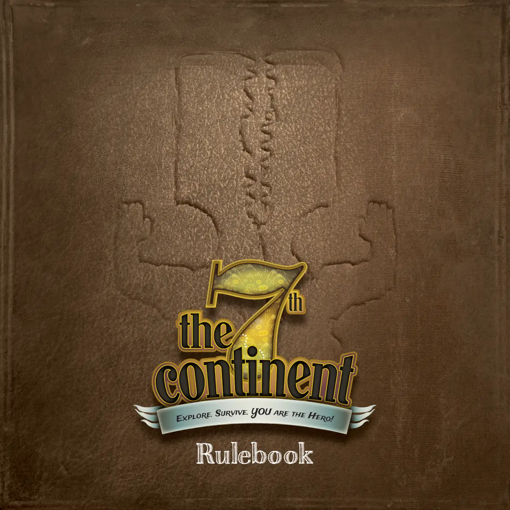
<figcaption>原版规则书 · 第 1 页（点击图片放大）</figcaption>
</figure>

<details class="mt-fold">
<summary>📝 第 1 页 AI 机翻对照（点击展开）</summary>
<div class="mt-body"><p>探索。</p>

<p>生存。你</p>

<p>是英雄！</p>

<p>规则书</p></div>
</details>

<figure>
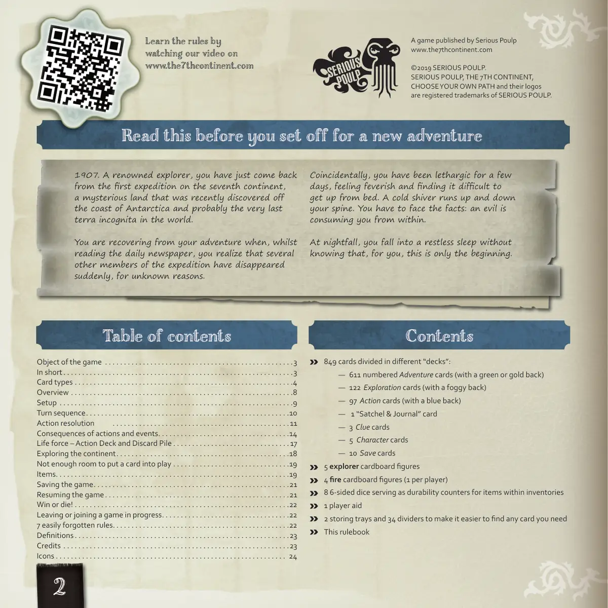
<figcaption>原版规则书 · 第 2 页（点击图片放大）</figcaption>
</figure>

<details class="mt-fold">
<summary>📝 第 2 页 AI 机翻对照（点击展开）</summary>
<div class="mt-body"><h2>游戏目标</h2>

<h2>简介</h2>

<h2>卡牌类型</h2>

<h2>概览</h2>

<h2>设置</h2>

<h2>回合顺序</h2>

<h2>行动结算</h2>

<h2>行动和事件的后果</h2>

<h2>生命值——行动牌库和弃牌堆</h2>

<h2>探索大陆</h2>

<h2>没有足够的空间放置卡牌</h2>

<h2>物品</h2>

<h2>保存游戏</h2>

<h2>继续游戏</h2>

<h2>胜利或死亡！</h2>

<h2>加入或进行中的游戏</h2>

<h2>7个容易被遗忘的规则</h2>

<h2>定义</h2>

<h2>制作人员</h2>

<h2>图标</h2>

<p>1907年。你是一位著名的探险家，刚刚从第七大陆的第一次探险中归来，这是一片最近在南极洲海岸附近发现的神秘土地，很可能是世界上最后一个未知领域。</p>

<p>你在冒险中恢复时，在阅读日报时，意识到有几</p>

<p>探险队的其他成员突然消失了，</p>

<p>原因不明。</p>

<p>巧合的是，你已经昏昏沉沉好几天了，</p>

<p>感觉发烧，难以从床上起身。</p>

<p>一阵寒意从你的脊背窜上窜下。</p>

<p>你必须面对现实：一股邪恶正在从内部吞噬你。</p>

<p>夜幕降临时，你陷入不安的睡眠，</p>

<p>却不知道对你而言，这仅仅是个开始。</p>

<p>由 Serious Poulp 出版的游戏</p>

<p>www.the7thcontinent.com</p>

<p>©2019 SERIOUS POULP.</p>

<p>SERIOUS POULP, THE 7TH CONTINENT,</p>

<p>CHOOSE YOUR OWN PATH 及其 logo 是 SERIOUS POULP 的注册商标。</p>

<p>在开始新的冒险前阅读此内容</p>

<p>通过观看我们位于</p>

<p>www.the7thcontinent.com 的视频来学习规则：</p>

<p>849张卡牌分为不同的"牌库"：</p>

<p>— 611张编号的冒险卡牌（背面为绿色或金色）</p>

<p>— 122张探索卡牌（背面为雾状）</p>

<p>— 97张行动卡牌（背面为蓝色）</p>

<p>— 1张"背包与日记"卡牌</p>

<p>— 3张线索卡牌</p>

<p>— 5张角色卡牌</p>

<p>— 10张拯救卡牌</p>

<p>5个探险者纸板棋子</p>

<p>4个火焰纸板棋子（每位玩家1个）</p>

<p>8个六面骰子，用作物品栏内物品的耐久度计数器</p>

<p>1张玩家辅助卡</p>

<p>2个收纳托盘和34个分隔物，以便更容易找到任何你需要的卡牌</p>

<p>本规则书</p>

<p>::::::</p>

<p>目录</p>

<p>目录</p></div>
</details>

<figure>
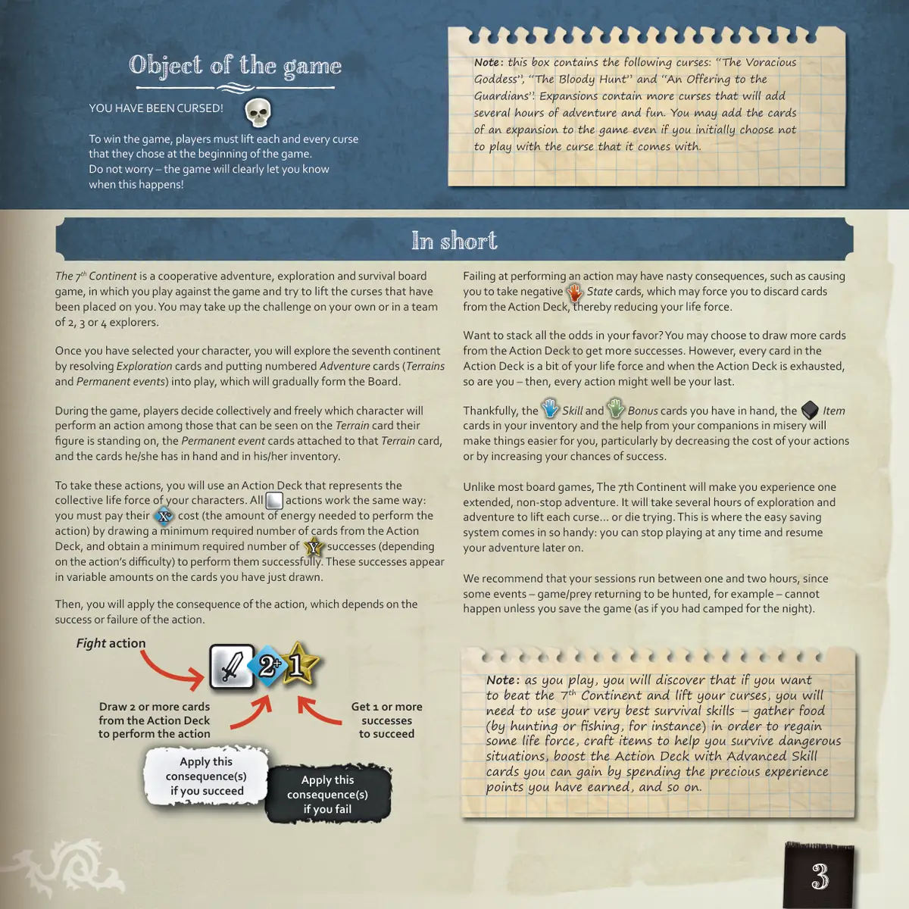
<figcaption>原版规则书 · 第 3 页（点击图片放大）</figcaption>
</figure>

<details class="mt-fold">
<summary>📝 第 3 页 AI 机翻对照（点击展开）</summary>
<div class="mt-body"><p>游戏目标</p>

<p>你被诅咒了！</p>

<p>要赢得游戏，玩家必须解除他们在游戏开始时选择的每一个诅咒。</p>

<p>不用担心——游戏会明确告诉你何时解除诅咒！</p>

<p>注意：这个盒子包含以下诅咒："贪食女神"、"血腥狩猎"和"献祭守护者"。扩展包包含更多诅咒，将增加数小时的冒险和乐趣。即使你最初选择不玩扩展包附带的诅咒，你也可以将扩展包的卡牌加入游戏中。</p>

<p>简述</p>

<p>《第七大陆》是一款合作冒险、探索和生存桌面游戏，在游戏中你对抗游戏本身，试图解除施加于你的诅咒。你可以独自挑战，也可以组成2、3或4名探险者的团队。</p>

<p>选择角色后，你将通过解决探索卡牌并将编号的冒险卡牌（地形和永久事件）放入游戏来探索第七大陆，这些卡牌将逐渐形成版图。</p>

<p>在游戏中，玩家集体且自由地决定哪个角色执行行动，可选择的行动包括：其棋子所在的地形卡牌上可见的行动、附着于该地形卡牌的永久事件卡牌上的行动，以及他/她手牌和物品栏中的卡牌上的行动。</p>

<p>要执行这些行动，你将使用行动牌库，它代表你角色的集体生命力。所有行动的工作方式相同：</p>

<p>你必须支付它们的 X+ 成本（执行行动所需的能量），通过从行动牌库中抽取至少所需数量的卡牌，并获得至少所需数量的 Y 成功值（取决于行动难度）来成功执行。这些成功值出现在你刚刚抽取的卡牌上，数量各不相同。</p>

<p>然后，你将应用行动的后果，这取决于行动的成功或失败。</p>

<p>执行行动失败可能会产生不良后果，例如使你获得负面状态卡牌，这可能迫使你弃掉行动牌库中的卡牌，从而减少你的生命力。</p>

<p>想要将所有 odds 都堆在你这边？你可以选择从行动牌库中抽取更多卡牌以获得更多成功值。然而，行动牌库中的每一张卡牌都是你生命力的一部分，当行动牌库耗尽时，你的生命力也会耗尽——那时，每个行动都可能成为你的最后一次。</p>

<p>幸运的是，你手中的技能卡牌和奖励卡牌、物品栏中的物品卡牌，以及同样身处困境的同伴的帮助将使事情变得更容易，特别是通过降低你的行动成本或增加你的成功几率。</p>

<p>与大多数桌面游戏不同，《第七大陆》将让你体验一次</p>

<p>不间断的延伸冒险。要解除每一个诅咒需要数小时的探索和冒险，或者就在尝试中死去。这就是为什么轻松的存档系统如此方便：你可以随时停止游戏，并在之后继续你的冒险。</p>

<p>我们建议你的游戏时长在一到两小时之间，因为某些事件——例如猎物返回被猎杀——只有在存档后才会发生（就像你露营过夜一样）。</p>

<p>2+</p>

<p>战斗行动</p>

<p>获得1个或更多成功值才能成功</p>

<p>从行动牌库中抽取2张或更多卡牌来执行行动</p>

<p>如果成功，应用此后果</p>

<p>如果失败，应用此后果</p>

<p>注意：随着游戏的进行，你会发现如果你想击败第7大陆并解除你的诅咒，你需要使用你最好的生存技能——例如通过狩猎或钓鱼来获取食物以恢复一些生命值，制作物品来帮助你在危险情况下生存，通过花费你获得的宝贵经验点来获得高级技能卡牌来增强行动牌库，等等。</p></div>
</details>

<figure>
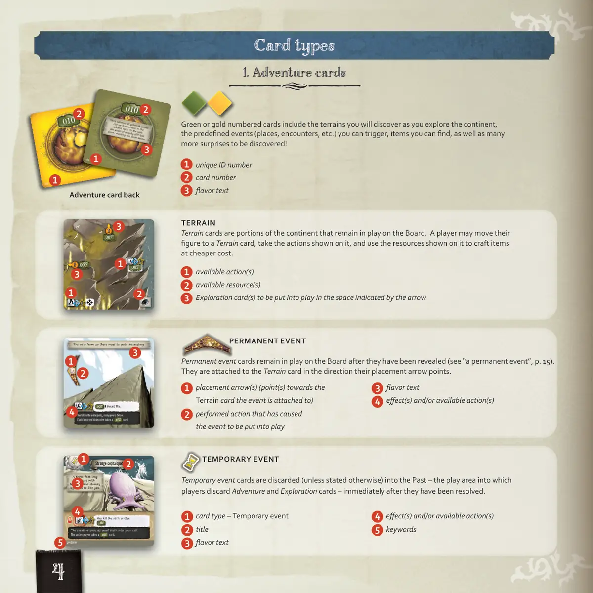
<figcaption>原版规则书 · 第 4 页（点击图片放大）</figcaption>
</figure>

<details class="mt-fold">
<summary>📝 第 4 页 AI 机翻对照（点击展开）</summary>
<div class="mt-body"><p>绿色或金色数字卡牌包含你在探索大陆时将发现的地形，</p>

<p>你可以触发的预定义事件（地点、遭遇等），你可以找到的物品，以及许多</p>

<p>其他等待发现的惊喜！</p>

<h2>地形</h2>

<p>地形卡牌是留在版图上的大陆的一部分。玩家可以将他们的棋子移动到地形卡牌上，执行其上显示的行动，并使用其上显示的资源以更低成本制作物品。</p>

<p>可用行动</p>

<p>可用资源</p>

<p>要放置在箭头所示区域中的探索卡牌</p>

<h2>临时事件</h2>

<p>临时事件卡牌在解决后立即被弃入过去——玩家在此弃置冒险和探索卡牌的游戏区域——（除非另有说明）。</p>

<h2>永久事件</h2>

<p>永久事件卡牌在揭示后留在版图上（参见"永久事件"，第15页）。</p>

<p>它们被附加到放置箭头指向的地形卡牌上。</p>

<p>放置箭头（指向事件所附加的</p>

<p>地形卡牌）</p>

<p>导致事件被触发的</p>

<p>已执行行动</p>

<p>背景文本</p>

<p>效果和/或可用行动</p>

<p>唯一ID编号</p>

<p>卡牌编号</p>

<p>背景文本</p>

<h3>1. 冒险卡牌</h3>

<p>冒险卡牌背面</p>

<p>卡牌类型 – 临时事件</p>

<p>标题</p>

<p>背景文本</p>

<p>效果和/或可用行动</p>

<p>关键词</p>

<p>卡牌类型</p></div>
</details>

<figure>
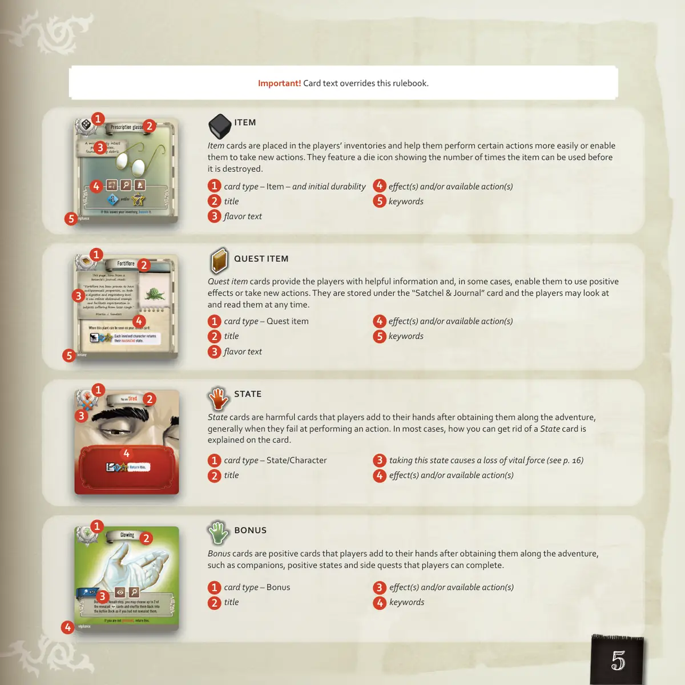
<figcaption>原版规则书 · 第 5 页（点击图片放大）</figcaption>
</figure>

<details class="mt-fold">
<summary>📝 第 5 页 AI 机翻对照（点击展开）</summary>
<div class="mt-body"><h2>状态卡</h2>

<p>状态卡是玩家在冒险过程中获得后加入手牌的有害卡牌，通常是在玩家执行行动失败时。在大多数情况下，如何摆脱一张状态卡会在卡牌上说明。</p>

<p>卡牌类型 – 状态/角色</p>

<p>标题</p>

<p>获得此状态会导致生命力损失（见第16页）</p>

<p>效果和/或可用行动</p>

<h2>奖励卡</h2>

<p>奖励卡是玩家在冒险过程中获得后加入手牌的正面卡牌，例如同伴、正面状态和玩家可以完成的支线任务。</p>

<p>卡牌类型 – 奖励</p>

<p>标题</p>

<p>效果和/或可用行动</p>

<p>关键词</p>

<p>卡牌类型 – 物品 – 和初始耐久度</p>

<p>标题</p>

<p>风味文本</p>

<p>效果和/或可用行动</p>

<p>关键词</p>

<h2>物品卡</h2>

<p>物品卡被放置在玩家的背包中，帮助他们更容易执行某些行动或使他们能够采取新的行动。它们有一个骰子图标，显示物品在被摧毁前可以使用的次数。</p>

<h2>任务物品卡</h2>

<p>任务物品卡为玩家提供有用的信息，在某些情况下，使他们能够使用正面效果或采取新的行动。它们被存放在"背包与日志"卡牌下，玩家可以随时查看和阅读它们。</p>

<p>卡牌类型 – 任务物品</p>

<p>标题</p>

<p>风味文本</p>

<p>效果和/或可用行动</p>

<p>关键词</p>

<p>重要！卡牌文本优先于本规则书。</p></div>
</details>

<figure>
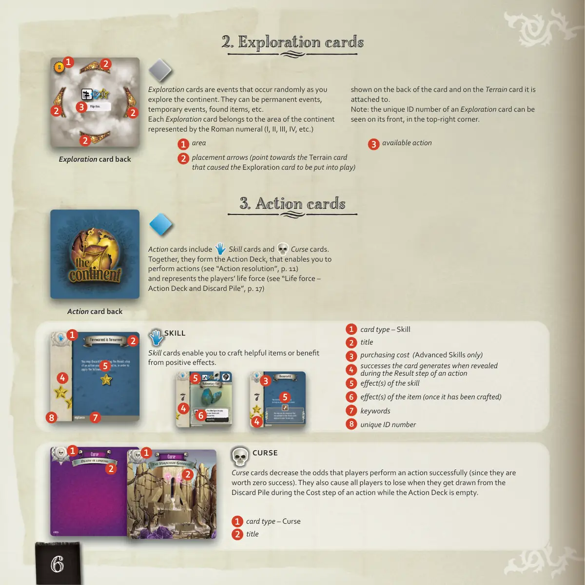
<figcaption>原版规则书 · 第 6 页（点击图片放大）</figcaption>
</figure>

<details class="mt-fold">
<summary>📝 第 6 页 AI 机翻对照（点击展开）</summary>
<div class="mt-body"><p>行动卡包括</p>

<p>技能卡和</p>

<p>诅咒卡。</p>

<p>它们共同构成行动牌库，使你能够</p>

<p>执行行动（参见"行动结算"，第11页）</p>

<p>并代表玩家的生命值（参见"生命值——行动牌库与弃牌堆"，第17页）</p>

<p>探索卡是你在探索大陆时随机发生的事件。它们可以是永久事件、临时事件、找到的物品等。</p>

<p>每张探索卡属于由卡片背面和其附着的地形卡上显示的罗马数字（I、II、III、IV等）所代表的大陆区域。</p>

<p>注意：探索卡的唯一ID号可以在其正面右上角看到。</p>

<p>区域</p>

<p>放置箭头（指向导致探索卡被置入游戏的地形卡）</p>

<p>可用行动</p>

<h3>2. 探索卡</h3>

<h3>3. 行动卡</h3>

<p>f</p>

<p>f</p>

<h2>技能</h2>

<p>技能卡使你能够制作有用的物品或受益于积极效果。</p>

<h2>诅咒</h2>

<p>诅咒卡降低玩家成功执行行动的概率（因为它们产生0点成功）。当行动牌库为空时，它们还会导致所有玩家在行动的成本阶段从弃牌堆中抽取诅咒卡时失败。</p>

<p>卡牌类型 – 诅咒</p>

<p>标题</p>

<p>卡牌类型 – 技能</p>

<p>标题</p>

<p>购买成本（仅限高级技能）</p>

<p>卡牌在行动的结果阶段揭示时产生的成功点数</p>

<p>技能的效果</p>

<p>物品的效果（一旦被制作）</p>

<p>关键词</p>

<p>唯一ID号</p>

<p>探索卡背面</p>

<p>行动卡背面</p></div>
</details>

<figure>
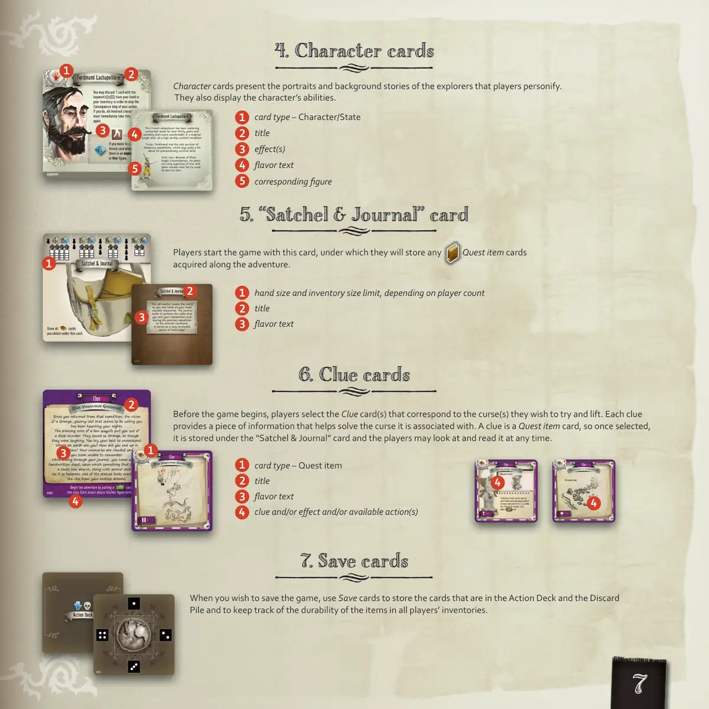
<figcaption>原版规则书 · 第 7 页（点击图片放大）</figcaption>
</figure>

<details class="mt-fold">
<summary>📝 第 7 页 AI 机翻对照（点击展开）</summary>
<div class="mt-body"><p>玩家开始游戏时拥有这张卡，他们将在其下存储在冒险过程中获得的任何任务物品卡。</p>

<p>游戏开始前，玩家选择与他们希望尝试解除的诅咒相对应的线索卡。每条线索提供一条信息，有助于解决与之相关的诅咒。线索是任务物品卡，因此一旦被选中，它就被存储在"背包与日志"卡下，玩家可以随时查看和阅读它。</p>

<p>当你想要保存游戏时，使用保存卡来存储行动牌库和弃牌堆中的卡牌，并跟踪所有玩家物品栏中物品的耐久度。</p>

<p>卡牌类型 – 角色/状态</p>

<p>标题</p>

<p>效果</p>

<p>背景文本</p>

<p>对应的人物形象</p>

<p>卡牌类型 – 任务物品</p>

<p>标题</p>

<p>背景文本</p>

<p>线索和/或效果和/或可用行动</p>

<p>手牌大小和物品栏大小限制，取决于玩家数量</p>

<p>标题</p>

<p>背景文本</p>

<p>角色卡展示了玩家扮演的探险者的肖像和背景故事。</p>

<p>它们还显示角色的能力。</p>

<h3>4. 角色卡</h3>

<ol>
  <li>"背包与日志"卡</li>
</ol>

<h3>6. 线索卡</h3>

<h3>7. 保存卡</h3>

<p>f</p>

<p>f</p>

<p>f</p>

<p>f</p></div>
</details>

<figure>
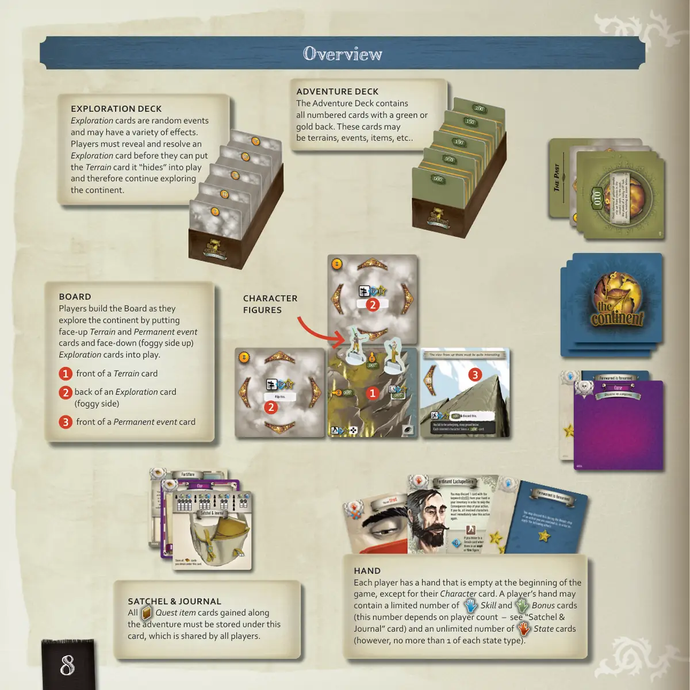
<figcaption>原版规则书 · 第 8 页（点击图片放大）</figcaption>
</figure>

<details class="mt-fold">
<summary>📝 第 8 页 AI 机翻对照（点击展开）</summary>
<div class="mt-body"><h2>冒险牌库</h2>

<p>冒险牌库包含所有背面为绿色或金色的编号卡牌。这些卡牌可能是地形卡、事件卡、物品卡等。</p>

<h2>角色</h2>

<h2>棋子</h2>

<h2>探险牌库</h2>

<p>探险卡是随机事件，可能有多种效果。玩家必须揭示并解决一张探险卡，然后才能将其"隐藏"的地形卡置入游戏中，从而继续探索大陆。</p>

<h2>背包与日志</h2>

<p>冒险中获得的所有任务物品卡必须存放在这张卡牌下，这张卡牌由所有玩家共享。</p>

<h2>版图</h2>

<p>玩家通过探索大陆来构建版图，他们将面朝上的地形卡和永久事件卡以及面朝下（雾面朝上）的探险卡置入游戏中。</p>

<p>1 地形卡正面</p>

<p>2 探险卡背面（雾面）</p>

<p>3 永久事件卡正面</p>

<h2>手牌</h2>

<p>游戏开始时，每个玩家的手牌是空的，除了他们的角色卡。玩家的手牌可能包含有限数量的技能卡和奖励卡（这个数量取决于玩家数量 - 参见"背包与日志"卡）以及无限数量的状态卡（但是，每种状态类型不超过1张）。</p>

<p>概览</p></div>
</details>

<figure>
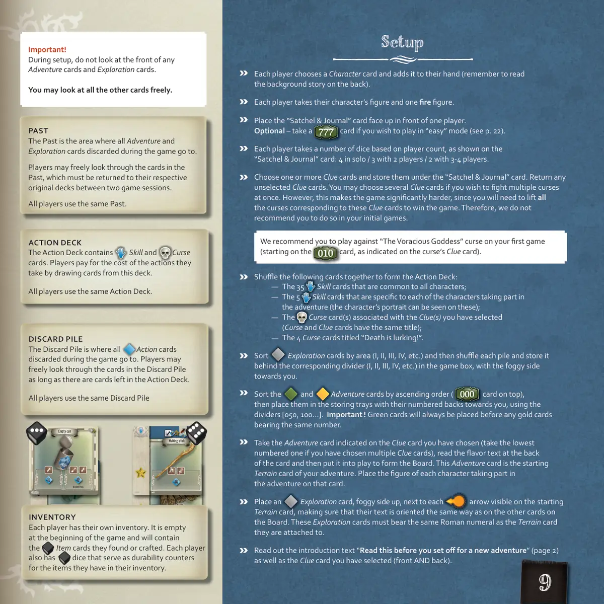
<figcaption>原版规则书 · 第 9 页（点击图片放大）</figcaption>
</figure>

<details class="mt-fold">
<summary>📝 第 9 页 AI 机翻对照（点击展开）</summary>
<div class="mt-body"><h2>行动牌库</h2>

<p>行动牌库包含技能牌和诅咒牌。玩家通过从该牌库中抽牌来支付他们所采取行动的费用。</p>

<p>所有玩家使用同一个行动牌库。</p>

<p>每位玩家选择一张角色牌并将其加入手牌（记得阅读背面的背景故事）。</p>

<p>每位玩家拿取他们角色的棋子和一个火焰棋子。</p>

<p>将"背包与日记"牌正面朝上放在一位玩家面前。</p>

<p>可选 - 如果你希望以"简单"模式游玩，请拿取一张777牌（见第22页）。</p>

<p>每位玩家根据玩家数量拿取相应数量的骰子，如"背包与日记"牌所示：单人模式4个/2人模式3个/3-4人模式2个。</p>

<p>选择一张或多条线索牌，将其存放在"背包与日记"牌下方。退回任何未被选中的线索牌。如果你希望同时对抗多个诅咒，可以选择多条线索牌。然而，这会使游戏显著变难，因为你需要解除与这些线索牌相对应的所有诅咒才能赢得游戏。因此，我们不建议你在初次游戏时这样做。</p>

<p>将以下牌洗混形成行动牌库：</p>

<p>— 所有角色共有的35张技能牌；</p>

<p>— 参与冒险的每位角色特有的5张技能牌（可以在这些牌上看到角色的肖像）；</p>

<p>— 与你已选中的线索牌相关联的诅咒牌（诅咒牌和线索牌有相同的标题）；</p>

<p>— 4张标题为"死亡潜伏！"的诅咒牌。</p>

<p>按区域（I、II、III、IV等）整理探索牌，然后洗混每堆牌，并将其存放在游戏盒中对应的分隔卡（I、II、III、IV等）后面，有雾的一面朝向你。</p>

<p>按升序整理冒险牌（000牌在最上面），然后将其放入收纳托盘中，编号背面朝你，使用分隔卡[050, 100…]。重要！绿色牌将始终放在任何具有相同编号的金色牌之前。</p>

<p>取你已选中的线索牌上指示的冒险牌（如果你选择了多条线索牌，则取编号最低的那张），阅读卡牌背面的风味文本，然后将其放入游戏形成版图。这张冒险牌是你冒险的起始地形牌。将参与冒险的每位角色的棋子放在该卡牌上。</p>

<p>在起始地形牌上每条可见箭头旁边放置一张探索牌，有雾的一面朝上，确保它们的文字方向与版图上其他卡牌的文字方向相同。这些探索牌必须带有与它们所附着的地形牌相同的罗马数字。</p>

<p>朗读"在新冒险出发前阅读此文本"（第2页）的介绍文本以及你选中的线索牌（正面和背面）。</p>

<h2>弃牌堆</h2>

<p>弃牌堆是游戏中所有被弃置的行动卡的去处。只要行动牌库中还有牌，玩家就可以自由查看弃牌堆中的卡牌。所有玩家使用同一个弃牌堆。</p>

<p>重要！</p>

<p>在设置阶段，不要查看任何冒险卡和探索卡的正面的内容。你可以自由查看所有其他卡牌。</p>

<p>设置</p>

<h2>物品栏</h2>

<p>每个玩家都有自己的物品栏。游戏开始时它是空的，将包含他们找到或制作的物品卡。每个玩家还有骰子，用作他们物品栏中物品的耐久度计数器。</p>

<h2>过去</h2>

<p>过去是游戏中所有被弃置的冒险卡和探索卡的去处。玩家可以自由查看过去的卡牌，这些卡牌必须在两个游戏回合之间返回到它们各自的原始牌库中。所有玩家使用同一个"过去"。</p>

<p>我们建议你在第一场游戏中对抗"贪食女神"诅咒（从010号卡开始，如诅咒的线索卡上所示）。</p></div>
</details>

<figure>
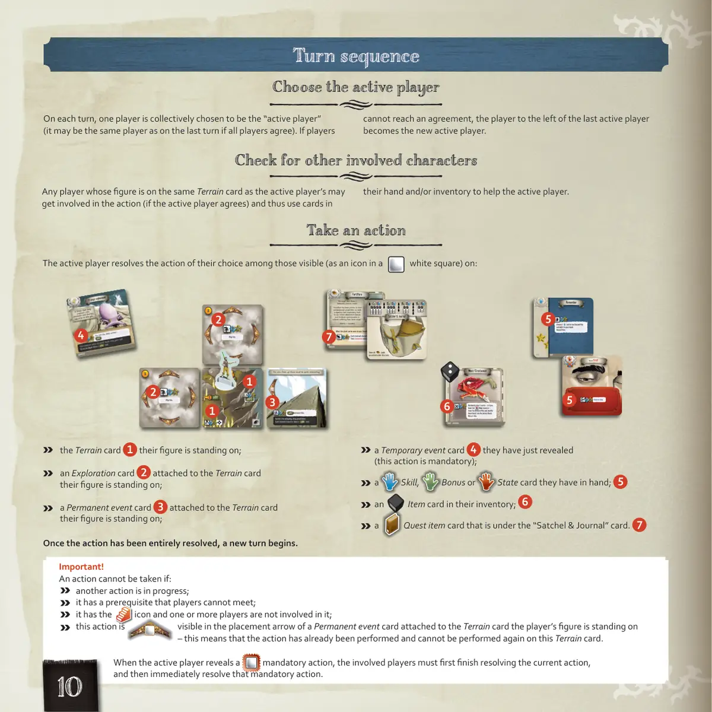
<figcaption>原版规则书 · 第 10 页（点击图片放大）</figcaption>
</figure>

<details class="mt-fold">
<summary>📝 第 10 页 AI 机翻对照（点击展开）</summary>
<div class="mt-body"><p>其棋子所在的地形卡 1 上的地形卡；</p>

<p>附着在其棋子所在的地形卡上的探索卡 2；</p>

<p>附着在其棋子所在的地形卡上的永久事件卡 3；</p>

<p>他们刚刚揭示的临时事件卡 4（此行动是强制性的）；</p>

<p>他们手中的技能卡、奖励卡或状态卡 5；</p>

<p>他们背包中的物品卡 6；</p>

<p>"背包与日记"卡下方的任务物品卡 7。</p>

<p>在每个回合中，玩家们共同选择一名玩家成为"活跃玩家"（如果所有玩家同意，可以是与上一回合相同的玩家）。如果玩家们无法达成一致，则由上一回合活跃玩家左侧的玩家成为新的活跃玩家。</p>

<p>任何棋子与活跃玩家位于同一地形卡上的玩家都可以参与该行动（如果活跃玩家同意），并因此可以使用他们手中的卡牌和/或背包中的卡牌来帮助活跃玩家。</p>

<p>::</p>

<p>:</p>

<p>:</p>

<p>::</p>

<p>:</p>

<p>重要！</p>

<p>如果发生以下情况，则不能采取行动：</p>

<p>另一个行动正在进行中；</p>

<p>它有一个玩家无法满足的前提条件；</p>

<p>它有</p>

<p>图标且一个或多个玩家未参与其中；</p>

<p>该行动在玩家棋子所在的地形卡附着的永久事件卡的放置箭头中可见</p>

<p>——这意味着该行动已经执行过，且不能在该地形卡上再次执行。</p>

<p>   当活跃玩家揭示强制性行动时，参与的玩家必须先完成解决当前行动，然后立即解决该强制性行动。</p>

<p>:::</p>

<p>活跃玩家在以下可见的行动中选择一个进行解决（以白色方块中的图标形式显示）：</p>

<p>选择活跃玩家</p>

<p>f</p>

<p>检查其他参与角色</p>

<p>f</p>

<p>一旦行动完全解决，新回合开始。</p>

<p>采取行动</p>

<p>f</p>

<p>:</p>

<p>回合顺序</p></div>
</details>

<figure>
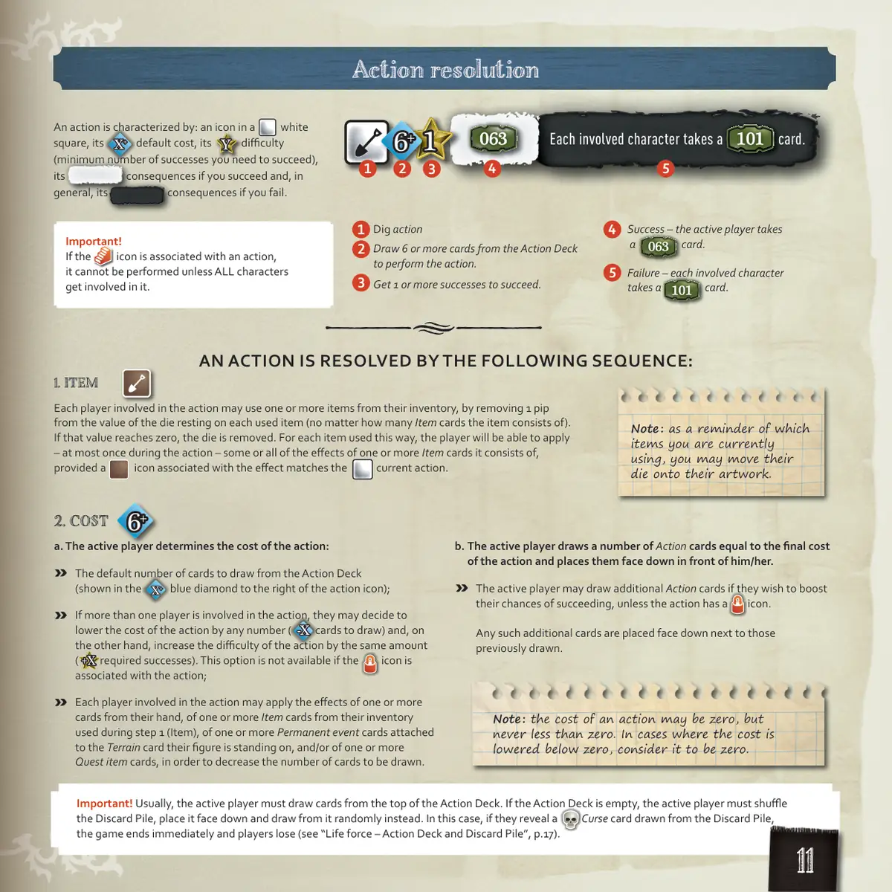
<figcaption>原版规则书 · 第 11 页（点击图片放大）</figcaption>
</figure>

<details class="mt-fold">
<summary>📝 第 11 页 AI 机翻对照（点击展开）</summary>
<div class="mt-body"><p>重要！</p>

<p>如果</p>

<p>图标与某个行动相关联，则除非所有角色都参与其中，否则无法执行该行动。</p>

<p>参与该行动的每位玩家可以使用其库存中的一个或多个物品，方法是移除位于每个使用物品上的骰子上的1个点数（无论该物品由多少张物品卡组成）。</p>

<p>如果该值降至零，则移除该骰子。以这种方式使用的每个物品，玩家将能够在行动期间最多应用一次其包含的一张或多张物品卡的部分或全部效果，前提是与该效果相关联的</p>

<p>图标与当前行动匹配。</p>

<p>一个行动的特征包括：白色方块中的图标，其 X+ 默认成本，其 Y 难度（成功所需的最小成功次数），成功时的后果，以及通常情况下失败时的后果。</p>

<p>f</p>

<p>挖掘行动</p>

<p>从行动牌库中抽取6张或更多牌来执行该行动。</p>

<p>获得1个或更多成功即可成功。</p>

<p>成功——当前玩家获得一张 063 063 卡牌。</p>

<p>失败——每位参与角色获得一张 101 101 卡牌。</p>

<p>a. 当前玩家确定行动的成本：</p>

<p>从行动牌库中抽取的默认牌数（显示在行动图标右侧的 X+ 蓝色菱形中）；</p>

<p>如果有多名玩家参与该行动，他们可以决定通过任意数量（ -X -X 张牌）降低行动成本，同时以相同数量增加行动难度（ +X 所需成功次数）。如果行动关联有</p>

<p>图标，则此选项不可用；</p>

<p>参与该行动的每位玩家可以应用其手牌中的一张或多张卡牌、在步骤1（物品）期间使用的其库存中的一张或多张物品卡、其人物所在地形牌上附着的一张或多张永久事件卡，和/或一张或多张任务物品卡的效果，以减少需要抽取的牌数。</p>

<p>b.  当前玩家抽取等于行动最终成本的行动牌数，并将其面朝下放在自己面前。</p>

<p>如果玩家希望提高成功几率，可以额外抽取行动牌，除非该行动有</p>

<p>图标。</p>

<p>任何此类额外牌都面朝下放在先前抽取的牌旁边。</p>

<h2>行动按以下顺序解决：</h2>

<p>重要！通常，当前玩家必须从行动牌库顶部抽取牌。如果行动牌库为空，当前玩家必须洗弃牌堆，将其面朝下放置，并从中随机抽取。在这种情况下，如果他们从弃牌堆中揭示出一张诅咒牌，游戏立即结束，玩家失败（参见"生命值——行动牌库和弃牌堆"，第17页）。</p>

<h2>1. 物品</h2>

<h2>2. 成本</h2>

<p>注意：作为提醒，显示你当前</p>

<p>使用，你可以将他们的骰子移到他们的艺术图上。</p>

<p>注意：行动的费用可能为零，但永远不会低于零。在费用被降低到零以下的情况下，将其视为零。</p>

<p>6+</p>

<p>:</p>

<p>:</p>

<p>:</p>

<p>:</p>

<p>每位相关角色获得一张101卡牌。</p>

<p>6+</p>

<p>行动结算</p></div>
</details>

<figure>
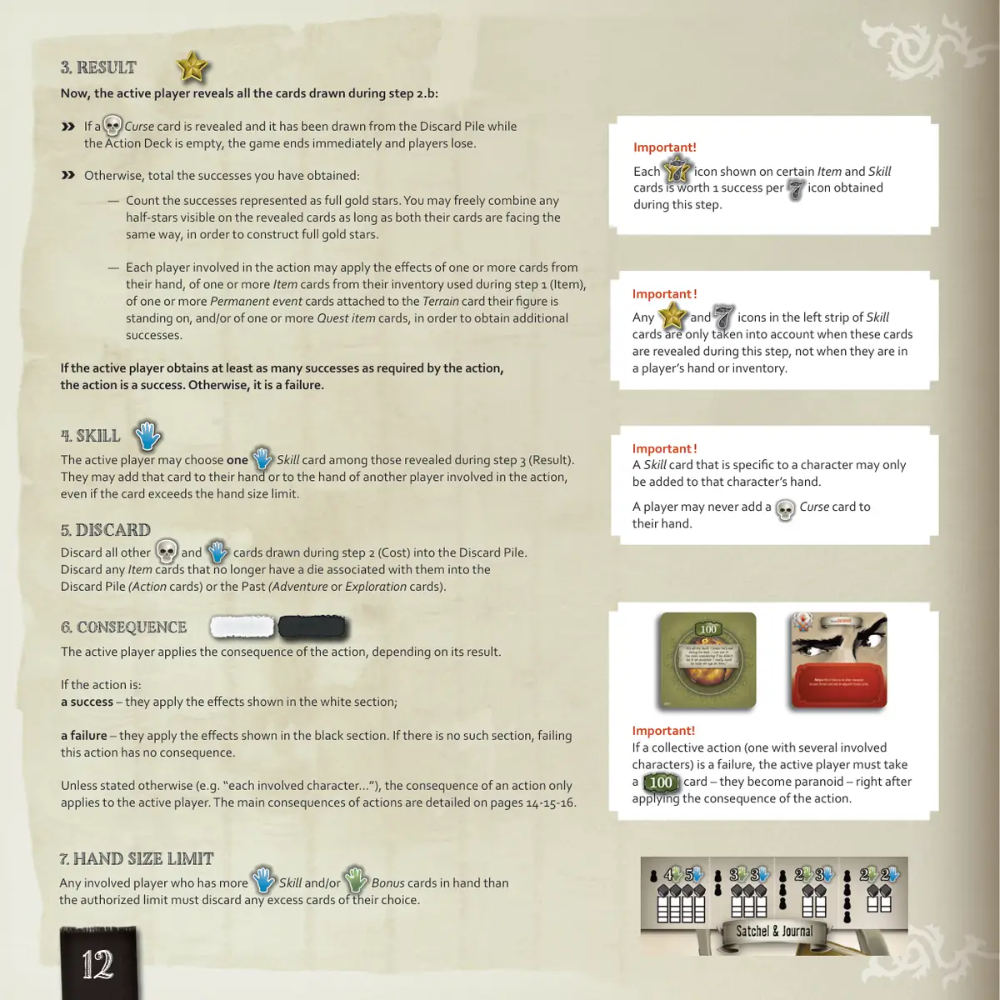
<figcaption>原版规则书 · 第 12 页（点击图片放大）</figcaption>
</figure>

<details class="mt-fold">
<summary>📝 第 12 页 AI 机翻对照（点击展开）</summary>
<div class="mt-body"><p>现在，当前玩家揭示在步骤2.b中抽出的所有卡牌：</p>

<p>如果揭示了一张诅咒卡，并且它是从弃牌堆中抽出的，同时行动牌库为空，则游戏立即结束，玩家失败。</p>

<p>否则，计算你获得的成功总数：</p>

<p>— 计算以完整金星表示的成功数。你可以自由组合任何在揭示卡牌上可见的半金星，只要这两张卡牌朝向相同，以构成完整的金星。</p>

<p>— 每个参与行动的玩家可以应用其手牌中的一张或多张卡牌、在步骤1(物品)中使用的一张或多张物品卡牌、其人物所在地形卡上附着的一张或多张永久事件卡牌，和/或一张或多张任务物品卡牌的效果，以获得额外的成功数。</p>

<p>如果当前玩家获得的成功数不少于行动所需的成功数，则行动成功。否则，行动失败。</p>

<p>重要！</p>

<p>某些物品卡和技能卡上显示的每个图标，在本步骤中获得的每个图标都计为1个成功点。</p>

<h2>3. 结果</h2>

<p>:</p>

<p>:</p>

<h2>4. 技能</h2>

<p>当前玩家可以在步骤3(结果)中揭示的技能卡中选择一张。</p>

<p>他们可以将该卡牌添加到自己的手牌或参与行动的其他玩家的手牌中，即使该卡牌超出了手牌上限。</p>

<p>当前玩家根据行动结果应用行动的后果。</p>

<p>如果行动是：</p>

<p>成功 - 他们应用白色区域所示的效果；</p>

<p>失败 - 他们应用黑色区域所示的效果。如果没有这样的区域，则此行动失败没有后果。</p>

<p>除非另有说明（例如"每个参与角色..."），行动的后果仅适用于当前玩家。行动的主要后果详见第14-15-16页。</p>

<h2>5. 弃牌</h2>

<p>将步骤2(成本)中抽出的所有其他卡牌和卡牌弃入弃牌堆。</p>

<p>将不再与骰子关联的任何物品卡牌弃入弃牌堆（行动卡牌）或过去（冒险或探索卡牌）。</p>

<h2>7. 手牌上限</h2>

<h2>6. 后果</h2>

<p>任何参与玩家如果手中的技能和/或奖励卡牌数量超过授权限制，必须弃掉任意超出数量的卡牌。</p>

<p>重要！</p>

<p>如果集体行动（有多个参与角色的行动）失败，当前玩家必须在应用行动后果后立即拿取一张100 100卡牌——他们变得偏执！</p>

<p>重要！</p>

<p>技能卡左侧条带中的任何和图标，仅在这些卡牌在本步骤中被揭示时才计入，当它们在玩家手牌或物品栏中时不计入。</p>

<p>重要！</p>

<p>特定于角色的技能卡只能添加到该角色的手牌中。</p>

<p>玩家永远不能将诅咒卡添加到</p>

<blockquote>
<p>他们的手牌。</p>
</blockquote></div>
</details>

<figure>
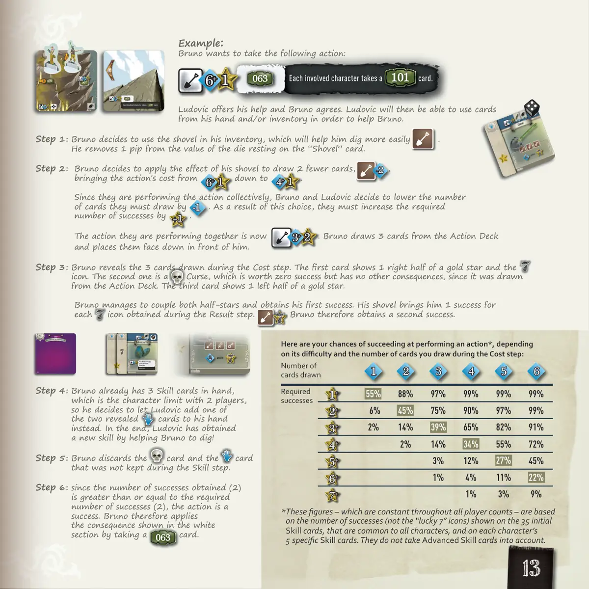
<figcaption>原版规则书 · 第 13 页（点击图片放大）</figcaption>
</figure>

<details class="mt-fold">
<summary>📝 第 13 页 AI 机翻对照（点击展开）</summary>
<div class="mt-body"><p>1+</p>

<p>5+</p>

<p>3+</p>

<p>7+</p>

<p>2+</p>

<p>6+</p>

<p>4+</p>

<p>55%</p>

<p>88%</p>

<p>97%</p>

<p>99%</p>

<p>99%</p>

<p>99%</p>

<p>6%</p>

<p>45%</p>

<p>75%</p>

<p>90%</p>

<p>97%</p>

<p>99%</p>

<p>2%</p>

<p>14%</p>

<p>39%</p>

<p>65%</p>

<p>82%</p>

<p>91%</p>

<p>2%</p>

<p>14%</p>

<p>34%</p>

<p>55%</p>

<p>72%</p>

<p>3%</p>

<p>1%</p>

<p>12%</p>

<p>27%</p>

<p>45%</p>

<p>4%</p>

<p>1%</p>

<p>11%</p>

<p>22%</p>

<p>3%</p>

<p>9%</p>

<p>以下是你在执行行动*时成功的几率，取决于行动的难度和在成本阶段抽到的卡牌数量：</p>

<p>:</p>

<p>所需成功数</p>

<p>抽到的卡牌数</p>

<p>*这些数据——在所有玩家数量下保持不变——基于35张初始技能卡上显示的成功数（而非"幸运7"图标），这些卡牌是所有角色共有的，以及每个角色的5张特定技能卡。它们没有考虑高级技能卡。</p>

<p>示例：</p>

<p>布鲁诺想要执行以下行动：</p>

<p>路多维克提供帮助，布鲁诺同意。路多维克随后将能够使用他手牌和/或物品库中的卡牌来帮助布鲁诺。</p>

<p>第1步：布鲁诺决定使用他物品库中的铲子，这将帮助他更容易挖掘。</p>

<p>他从放在"铲子"卡牌上的骰子数值中移除1个点。</p>

<p>第2步：布鲁诺决定应用他的铲子效果，少抽2张牌，</p>

<p>-2-2，</p>

<p>将行动的成本从</p>

<p>6+</p>

<p>降低到</p>

<p>4+</p>

<p>。</p>

<p>由于他们是集体执行行动，布鲁诺和路多维克决定减少他们必须抽的牌数，减少-1-1。因此，他们必须增加所需成功数+1</p>

<p>+1。</p>

<p>他们一起执行的行动现在是</p>

<p>3+</p>

<p>。布鲁诺从行动牌库抽3张牌，面朝下放在他面前。</p>

<p>第3步：布鲁诺揭示在成本阶段抽到的3张牌。第一张牌显示了1个金色星星的右半部分和</p>

<p>图标。第二张是</p>

<p>诅咒牌，价值为零成功，但由于是从行动牌库抽到的，没有其他后果。第三张牌显示了1个金色星星的左半部分。</p>

<p>布鲁诺成功配对两个半星，获得了他的第一个成功。他的铲子为他在结果阶段获得的每个</p>

<p>图标带来1个成功。</p>

<p>因此布鲁诺获得了第二个成功。</p>

<p>第4步：布鲁诺已经有3张技能牌在手牌中，这是2人游戏时的角色上限，所以他决定让路多维克将两张揭示的牌中的一张加入他的手牌。</p>

<p>最终，路多维克通过帮助布鲁诺挖掘获得了一项新技能！</p>

<p>第5步：布鲁诺丢弃在技能阶段没有保留的</p>

<p>牌和</p>

<p>牌。</p>

<p>第6步：由于获得的成功数(2)大于或等于所需成功数(2)，行动成功。因此布鲁诺应用白色区域所示的结果，获得一张063</p>

<p>063牌。</p>

<p>每位参与的角色获得一张101</p>

<p>101牌。</p>

<p>6+</p></div>
</details>

<figure>
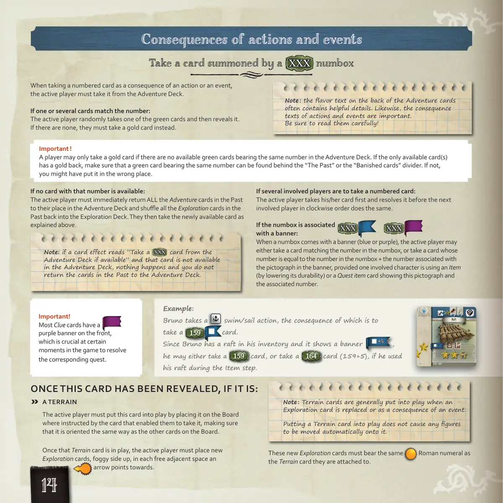
<figcaption>原版规则书 · 第 14 页（点击图片放大）</figcaption>
</figure>

<details class="mt-fold">
<summary>📝 第 14 页 AI 机翻对照（点击展开）</summary>
<div class="mt-body"><p>重要提示！</p>

<p>大多数线索卡正面都有紫色横幅，</p>

<p>这在游戏中的某些关键时刻对于</p>

<p>解决相应任务至关重要。</p>

<p>一旦该地形卡进入游戏，当前玩家必须</p>

<p>将新的探索卡（雾面朝上）放置在每个箭头指向的</p>

<p>相邻空格中。</p>

<p>这些新的探索卡必须带有与</p>

<p>其所附着的地形卡相同的罗马数字。</p>

<p>:</p>

<p>召唤一张XXX卡牌的玩家获得一张XXX卡</p>

<h2>XXX</h2>

<p>数字框</p>

<p>f</p>

<p>当作为行动或事件的结果抽取编号卡时，</p>

<p>当前玩家必须从冒险牌库中抽取。</p>

<p>如果有一张或多张卡牌匹配该编号：</p>

<p>当前玩家随机抽取一张绿色卡牌然后揭示。</p>

<p>如果没有，则必须抽取一张金色卡牌。</p>

<p>如果没有该编号的卡牌可用：</p>

<p>当前玩家必须立即将"过去"中的所有冒险卡牌放回冒险牌库，并将"过去"中的所有探索卡牌洗回探索牌库。然后他们按照上述说明抽取新可用的卡牌。</p>

<p>如果有多位相关玩家需要抽取编号卡：</p>

<p>当前玩家首先抽取并处理自己的卡牌，然后按顺时针顺序下一位相关玩家做同样操作。</p>

<p>如果数字框与横幅相关联：</p>

<p>当数字框带有横幅（蓝色或紫色）时，当前玩家可以抽取一张与数字框中编号匹配的卡牌，或者抽取一张编号等于数字框中编号加上横幅中象形符号关联编号的卡牌，前提是有一位相关角色正在使用一件物品（通过降低其耐久度）或一张显示该象形符号和关联编号的任务物品卡。</p>

<p>重要提示！</p>

<p>只有在冒险牌库中没有相同编号的可用绿色卡牌时，玩家才能抽取金色卡牌。如果唯一可用的卡牌是金色背面，请确保在"过去"或"放逐卡牌"分隔符后面能找到一张相同编号的绿色卡牌。如果没有，你可能把它放错了位置。</p>

<p>注意：地形卡通常在探索卡被替换或作为事件的结果时进入游戏。</p>

<p>将地形卡放入游戏不会自动将任何棋子移动到其上。</p>

<h2>当这张卡被揭示后，如果是：</h2>

<p>示例：</p>

<p>布鲁诺执行游泳/航行行动，结果是抽取一张159卡。</p>

<p>由于布鲁诺的背包中有一个木筏，上面显示一个+5横幅，</p>

<p>如果在物品步骤中他使用了木筏，他可以选择抽取一张159卡，或者抽取一张164卡（159+5）。</p>

<h2>XXX</h2>

<h2>XXX</h2>

<h2>XXX</h2>

<h2>XXX</h2>

<p>行动和事件的后果</p>

<p>注意：冒险卡牌背面的风味文本通常包含有用的细节。同样，行动和事件的后果文本也很重要。</p>

<p>请务必仔细阅读这些规则！</p>

<p>注意：如果一张卡牌效果写着"如果可能，从冒险牌库中拿取一张XXX XXX卡牌"，而该卡牌在冒险牌库中不可用，则什么都不会发生，你也不会将过去牌堆中的牌返回到冒险牌库中。</p>

<h2>地形</h2>

<p>当前玩家必须通过将这张牌放置在版图上（由允许他们拿取这张牌的卡牌指示的位置）来打出它，确保其方向与版图上的其他牌相同。</p></div>
</details>

<figure>
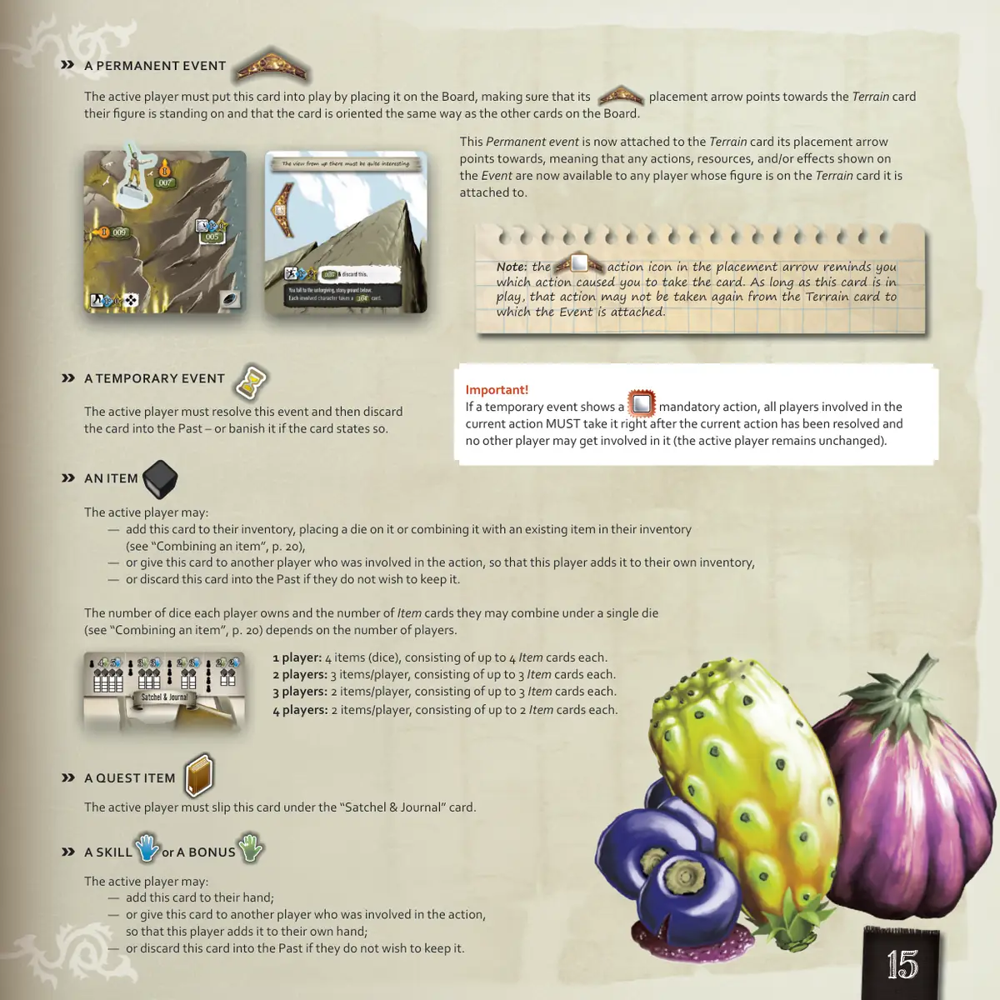
<figcaption>原版规则书 · 第 15 页（点击图片放大）</figcaption>
</figure>

<details class="mt-fold">
<summary>📝 第 15 页 AI 机翻对照（点击展开）</summary>
<div class="mt-body"><h2>永久事件</h2>

<p>当前玩家必须通过将此卡牌放置到版图上来使其生效，确保其放置箭头指向其棋子所在的地形卡牌，并且该卡牌的方向与版图上的其他卡牌相同。</p>

<h2>临时事件</h2>

<p>当前玩家必须解决此事件，然后将此卡牌弃入过去——如果卡牌上有说明，则放逐它。</p>

<h2>物品</h2>

<p>当前玩家可以：</p>

<p>— 将此卡牌添加到其物品栏中，在其上放置一个骰子，或将其与物品栏中已有的物品组合（见"组合物品"，第20页），</p>

<p>— 或将此卡牌给另一位参与该行动的玩家，使该玩家将其添加到自己的物品栏中，</p>

<p>— 或如果不想保留此卡牌，则将其弃入过去。</p>

<p>每位玩家拥有的骰子数量以及他们可以在单个骰子下组合的物品卡牌数量（见"组合物品"，第20页）取决于玩家数量。</p>

<h2>任务物品</h2>

<p>当前玩家必须将此卡牌滑入"背包与日记"卡牌下方。</p>

<h2>技能</h2>

<p>或 奖励</p>

<p>当前玩家可以：</p>

<p>— 将此卡牌添加到其手牌中；</p>

<p>— 或将此卡牌给另一位参与该行动的玩家，使该玩家将其添加到自己的手牌中；</p>

<p>— 或如果不想保留此卡牌，则将其弃入过去。</p>

<p>注意：放置箭头中的行动图标提醒您是哪个行动使您获得了这张卡牌。只要这张卡牌在游戏中，就不能再从该事件所附的地形卡牌上再次执行该行动。</p>

<p>此永久事件现在附在其放置箭头指向的地形卡牌上，这意味着任何玩家，只要其棋子位于该事件所附的地形卡牌上，就可以使用该事件上显示的任何行动、资源和/或效果。</p>

<p>1名玩家：4个物品（骰子），每个最多包含4张物品卡牌。</p>

<p>2名玩家：每位玩家3个物品，每个最多包含3张物品卡牌。</p>

<p>3名玩家：每位玩家2个物品，每个最多包含3张物品卡牌。</p>

<p>4名玩家：每位玩家2个物品，每个最多包含2张物品卡牌。</p>

<p>重要！</p>

<p>如果临时事件显示强制性行动，所有参与当前行动的玩家必须在当前行动解决后立即执行该行动，且没有其他玩家可以参与其中（当前玩家保持不变）。</p></div>
</details>

<figure>
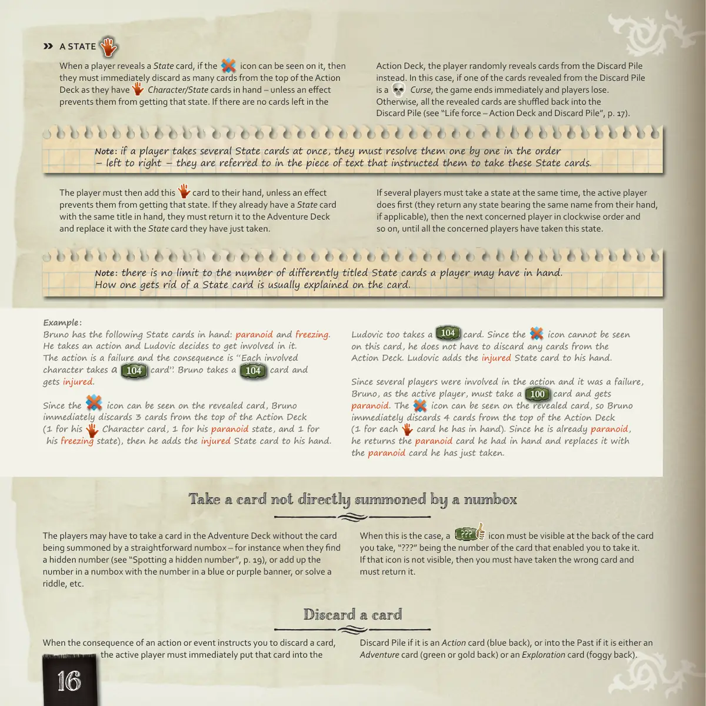
<figcaption>原版规则书 · 第 16 页（点击图片放大）</figcaption>
</figure>

<details class="mt-fold">
<summary>📝 第 16 页 AI 机翻对照（点击展开）</summary>
<div class="mt-body"><p>:</p>

<p>注意：玩家手牌中不同标题的"状态"卡牌数量没有限制。</p>

<p>如何处理一张"状态"卡牌通常在卡牌上有说明。</p>

<p>示例：</p>

<p>布鲁诺手中有以下"状态"卡牌：多疑和冰冻。</p>

<p>他执行一个行动，卢多维克决定参与其中。</p>

<p>行动失败，后果是"每个参与的角色获得一张104卡"。布鲁诺获得一张104卡并受伤。</p>

<p>由于可以在揭示的卡牌上看到图标，布鲁诺立即从行动牌库顶弃掉3张牌（1张给他的角色卡，1张给他的多疑状态，1张给他的冰冻状态），然后将受伤的"状态"卡牌加入他的手牌。</p>

<p>卢多维克也获得一张104卡。由于在这张卡牌上看不到图标，他不需要从行动牌库弃掉任何牌。卢多维克将受伤的"状态"卡牌加入他的手牌。</p>

<p>由于多名玩家参与了该行动且行动失败，作为主动玩家的布鲁诺必须获得一张100卡并变得多疑。可以在揭示的卡牌上看到图标，因此布鲁诺立即从行动牌库顶弃掉4张牌（他手牌中每张牌1张）。由于他已经处于多疑状态，他返回手中的多疑卡，并用刚刚获得的多疑卡替换它。</p>

<p>获得一张不由数字盒直接召唤的卡牌</p>

<p>弃掉一张卡牌</p>

<p>玩家可能需要在不由直接数字盒召唤的情况下从冒险牌库中获得一张卡牌——例如当他们发现隐藏数字时（参见"发现隐藏数字"，第19页），或将数字盒中的数字与蓝色或紫色横幅中的数字相加，或解开谜题等。</p>

<p>在这种情况下，你获得的卡牌背面必须有一个图标，其中"???"是使你能够获得该卡牌的数字。</p>

<p>如果该图标不可见，那么你一定是拿错了卡牌，必须将其返回。</p>

<p>当一个行动或事件的后果指示你弃掉一张卡牌时，如果它是行动卡（蓝色背面），主动玩家必须立即将其放入弃牌堆；如果它是冒险卡（绿色或金色背面）或探索卡（雾面背面），则必须将其放入过去。</p>

<p>注意：如果玩家同时获得多张"状态"卡牌，他们必须按照文本指示他们获得这些"状态"卡牌时的顺序——从左到右——逐一解决它们。</p>

<p>然后玩家必须将这张卡牌加入他们的手牌，除非有效果阻止他们获得该状态。如果他们手中已经有相同标题的"状态"卡牌，他们必须将其返回冒险牌库，并用刚刚获得的"状态"卡牌替换它。</p>

<p>如果多名玩家必须同时获得一个状态，主动玩家</p>

<p>首先（如果适用，他们从手牌中返还任何同名国家牌），然后按顺时针顺序下一位相关玩家，依此类推，直到所有相关玩家都获得了这个国家牌。</p>

<h2>一个国家</h2>

<p>当玩家展示一张国家牌时，如果牌上可以看到            图标，那么他们必须立即从行动牌库顶弃掉与他们手牌中角色/国家牌数量相同的牌数——除非有效果阻止他们获得该国家。如果行动牌库中没有牌了，玩家则从弃牌堆随机展示牌。在这种情况下，如果从弃牌堆中展示的一张牌是诅咒牌，游戏立即结束，玩家失败。否则，所有展示的牌都被洗回弃牌堆（参见"生命力——行动牌库和弃牌堆"，第17页）。</p></div>
</details>

<figure>
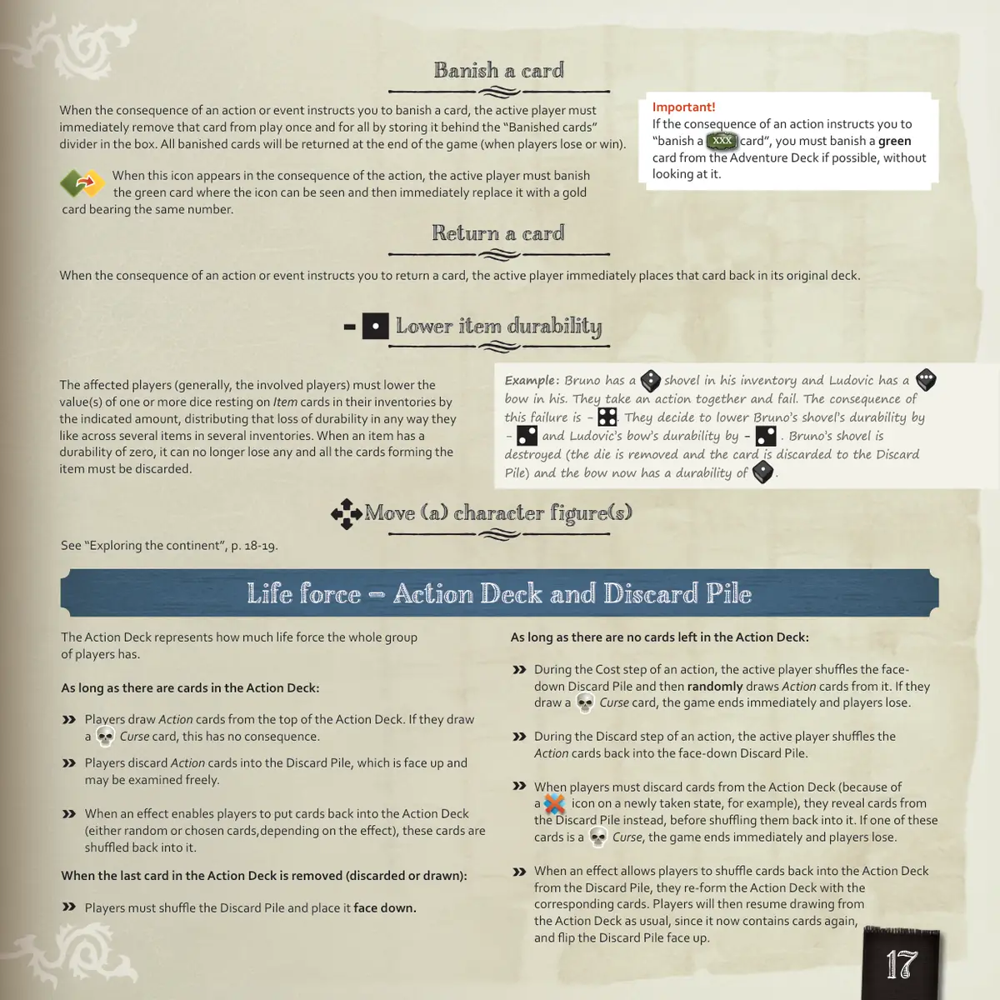
<figcaption>原版规则书 · 第 17 页（点击图片放大）</figcaption>
</figure>

<details class="mt-fold">
<summary>📝 第 17 页 AI 机翻对照（点击展开）</summary>
<div class="mt-body"><p>归还一张卡牌</p>

<p>移动(一个或多个)角色棋子</p>

<p>降低物品耐久度</p>

<p>放逐一张卡牌</p>

<p>当行动或事件的后果指示你归还一张卡牌时，当前玩家立即将该牌放回其原始牌库。</p>

<p>参见"探索大陆"，第18-19页。</p>

<p>受影响的玩家（通常为相关玩家）必须降低其手牌中物品卡上骰子的数值，按指示的量减少耐久度，并可以任意方式将这种耐久度损失分布在多个物品上。当物品耐久度为零时，它不能再失去任何耐久度，并且构成该物品的所有卡牌必须被弃置。</p>

<p>当行动或事件的后果指示你放逐一张卡牌时，当前玩家必须立即将该牌永久移出游戏，将其存放在盒子中的"放逐卡牌"分隔板后方。所有被放逐的卡牌将在游戏结束时（无论玩家输赢）被归还。</p>

<p>当此图标出现在行动的后果中时，当前玩家必须放逐可见该图标的绿色卡牌，然后立即用一张带有相同数字的金色卡牌替换它。</p>

<p>重要！</p>

<p>如果行动的后果指示你"放逐一张XXX卡"，你必须尽可能从冒险牌库中放逐一张绿色卡牌，且不能查看它。</p>

<p>-</p>

<p>生命值 - 行动牌库与弃牌堆</p>

<p>行动牌库代表整个玩家群体拥有的生命值。</p>

<p>只要行动牌库中有卡牌：</p>

<p>玩家从行动牌库顶部摸取行动牌。如果他们摸到诅咒牌，这不会产生任何后果。</p>

<p>玩家将行动牌弃入弃牌堆，弃牌堆面朝上，可以自由查看。</p>

<p>当某个效果允许玩家将卡牌放回行动牌库（根据效果可能是随机选择的卡牌），这些卡牌会被洗回牌库中。</p>

<p>当行动牌库中的最后一张卡牌被移除（被弃置或被摸取）：</p>

<p>玩家必须洗弃牌堆并将其面朝下放置。</p>

<p>只要行动牌库中没有卡牌：</p>

<p>在行动的消耗阶段，当前玩家将面朝下的弃牌堆洗牌，然后从中随机摸取行动牌。如果他们摸到诅咒牌，游戏立即结束，玩家失败。</p>

<p>在行动的弃牌阶段，当前玩家将行动牌洗回面朝下的弃牌堆。</p>

<p>当玩家必须从行动牌库中弃牌（例如，因为新获得的状态上有图标），他们改为从弃牌堆中揭示卡牌，然后在将其洗回弃牌堆之前。如果其中一张是诅咒牌，游戏立即结束，玩家失败。</p>

<p>当某个效果允许玩家将卡牌洗回行动牌库</p>

<p>从弃牌堆中，他们用相应的卡牌重新组成行动牌库。玩家将像往常一样继续从行动牌库摸牌，因为牌库现在又包含了卡牌，并将弃牌堆面朝上翻转。</p>

<p>：</p>

<p>：</p>

<p>：</p>

<p>：</p>

<p>：</p>

<p>：</p>

<p>：</p>

<p>：</p>

<p>示例：布鲁诺的库存中有一把铲子，而路多维克的库存中有一把弓。他们一起执行行动但失败了。这次失败的后果是 -。他们决定将布鲁诺的铲子耐久度降低 -，将路多维克的弓耐久度降低 -。布鲁诺的铲子被摧毁（骰子被移除，卡牌被弃置到弃牌堆），而弓现在的耐久度为 。</p></div>
</details>

<figure>
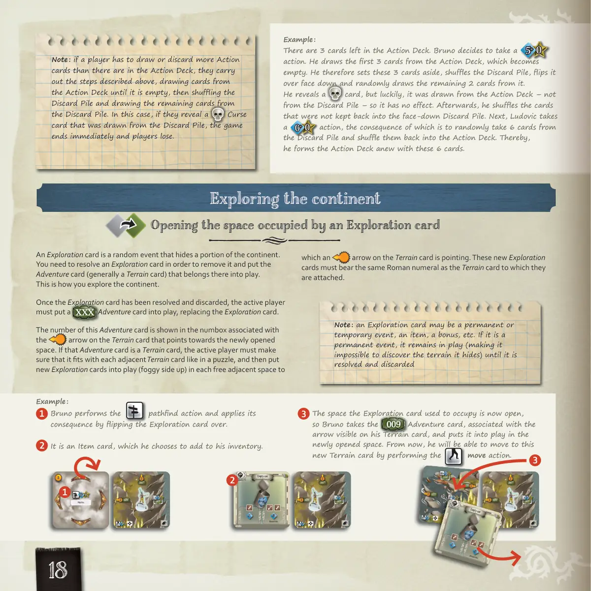
<figcaption>原版规则书 · 第 18 页（点击图片放大）</figcaption>
</figure>

<details class="mt-fold">
<summary>📝 第 18 页 AI 机翻对照（点击展开）</summary>
<div class="mt-body"><p>示例：</p>

<p>行动牌库中还剩3张牌。布鲁诺决定执行一个</p>

<p>5+</p>

<p>行动。他从行动牌库中抽取前3张牌，牌库因此变空。于是他将这3张牌放在一旁，洗混弃牌堆，将其面朝下翻转，并从中随机抽取剩余的2张牌。他揭示了一张</p>

<p>牌，但幸运的是，这张牌是从行动牌库中抽出的——不是从弃牌堆——所以它没有效果。之后，他将没有保留的牌洗回面朝下的弃牌堆。接下来，路多维克执行了一个</p>

<p>0+</p>

<p>行动，其后果是从弃牌堆中随机抽取6张牌，并将它们洗回行动牌库。由此，他用这6张牌重新组成了行动牌库。</p>

<p>示例：</p>

<p>1 布鲁诺执行了</p>

<p>寻路行动并通过翻转探索牌来应用其后果。</p>

<p>2 这是一张物品牌，他选择将其加入自己的物品栏。</p>

<p>3 探索牌原本占据的空间现在已开放，因此布鲁诺拿走了与他的地形牌上可见箭头相关联的</p>

<p>009</p>

<p>009 冒险牌，并将其放入新开放的空间中。从现在起，他可以通过执行</p>

<p>移动行动来移动到这个新的地形牌。</p>

<p>注意：如果玩家需要抽取或弃置的行动牌数量超过了行动牌库中的牌数，他们执行上述步骤，从行动牌库中抽牌直到牌库为空，然后洗混弃牌堆并从中抽取剩余的牌。在这种情况下，如果他们揭示了一张从弃牌堆中抽出的</p>

<p>诅咒牌，游戏立即结束，玩家失败。</p>

<p>注意：探索牌可能是永久或临时事件、物品、奖励等。如果它是永久事件，它将留在游戏中（使其隐藏的地形无法被发现），直到它被解决并弃置</p>

<p>打开被探索牌占据的空间</p>

<p>f</p>

<p>探索大陆</p>

<p>探索牌是一个随机事件，隐藏了大陆的一部分。你需要解决一张探索牌才能将其移除并放入属于该位置的冒险牌（通常是地形牌）。这就是你探索大陆的方式。</p>

<p>一旦探索牌被解决并弃置，当前玩家必须放入一张 XXX</p>

<p>XXX 冒险牌，替换探索牌。这张冒险牌的编号显示在地形牌上指向新开放空间的箭头相关联的数字框中。如果这张冒险牌是地形牌，当前玩家必须确保它与每张相邻的地形牌像拼图一样吻合，然后在每个空闲的相邻空间中放入新的探索牌（雾面朝上），这些空间是地形牌上有箭头指向的。这些新的探索</p>

<p>卡牌必须带有与它们所附着的地形卡相同的罗马数字。</p></div>
</details>

<figure>
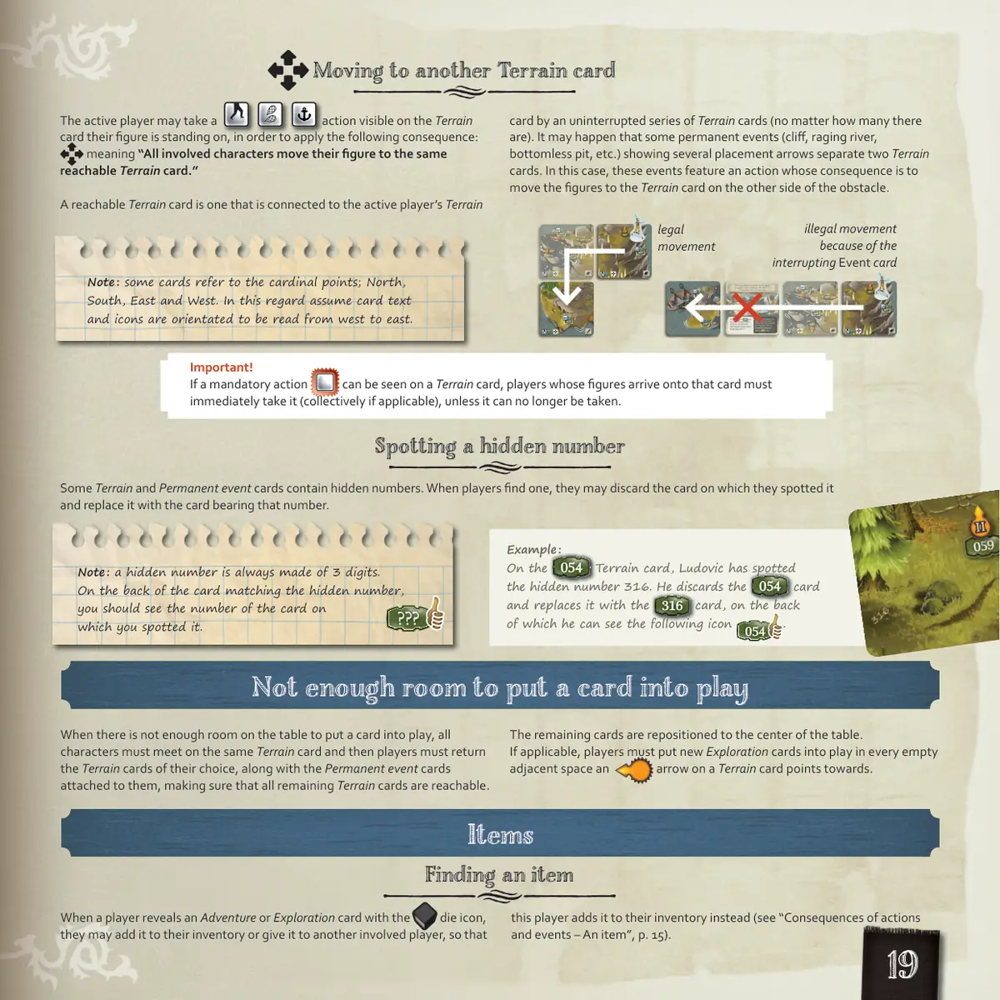
<figcaption>原版规则书 · 第 19 页（点击图片放大）</figcaption>
</figure>

<details class="mt-fold">
<summary>📝 第 19 页 AI 机翻对照（点击展开）</summary>
<div class="mt-body"><p>当前玩家可以采取其棋子所在地形牌上可见的行动，以应用以下后果：</p>

<p>即"所有相关角色将他们的棋子移动到相同可到达的地形牌。"</p>

<p>可到达的地形牌是指通过不间断的一系列地形牌（无论有多少张）与当前玩家的地形牌相连的地形牌。可能会发生这样的情况：一些显示多个放置箭头的永久事件（悬崖、汹涌的河流、无底洞等）将两张地形牌分开。在这种情况下，这些事件具有一个行动，其后果是将棋子移动到障碍物另一侧的地形牌。</p>

<p>一些地形和永久事件牌包含隐藏数字。当玩家发现一个时，他们可以丢弃发现该数字的牌，并用带有该数字的牌替换它。</p>

<p>当桌面上没有足够空间放置一张牌时，所有角色必须聚集在同一张地形牌上，然后玩家必须返回他们选择的地形牌以及附着在上面的永久事件牌，确保所有剩余的地形牌都是可到达的。剩余的牌被重新放置到桌子中央。</p>

<p>如果适用，玩家必须在每个相邻的空位中放入新的探索牌，地形牌上的箭头指向这些空位。</p>

<p>当玩家揭示一张带有骰子图标的冒险或探索牌时，他们可以将其添加到自己的物品栏中，或者交给另一个相关玩家，以便该玩家将其添加到自己的物品栏中（参见"行动和事件的后果——一件物品"，第15页）。</p>

<p>示例：</p>

<p>在054地形牌上，Ludovic发现了隐藏数字316。他丢弃了054牌，并用316牌替换它，在316牌的背面他可以看到以下图标054。</p>

<p>注意：一些牌提到了方位点：北、南、东和西。在这方面，假设牌面文字和图标是从西向东定向的。</p>

<p>注意：隐藏数字总是由3位数字组成。</p>

<p>在与隐藏数字匹配的牌背面，你应该能看到你发现该数字的牌的编号。</p>

<p>移动到另一张地形牌</p>

<p>发现隐藏数字</p>

<p>找到一件物品</p>

<p>f</p>

<p>f</p>

<p>f</p>

<p>???</p>

<p>???</p>

<p>物品</p>

<p>没有足够空间放置牌</p>

<p>合法移动</p>

<p>非法移动</p>

<p>由于中断的事件牌</p>

<p>重要！</p>

<p>如果在地形牌上可以看到强制行动，棋子到达该牌的玩家必须立即采取该行动（如适用则集体采取），除非该行动已无法采取。</p></div>
</details>

<figure>
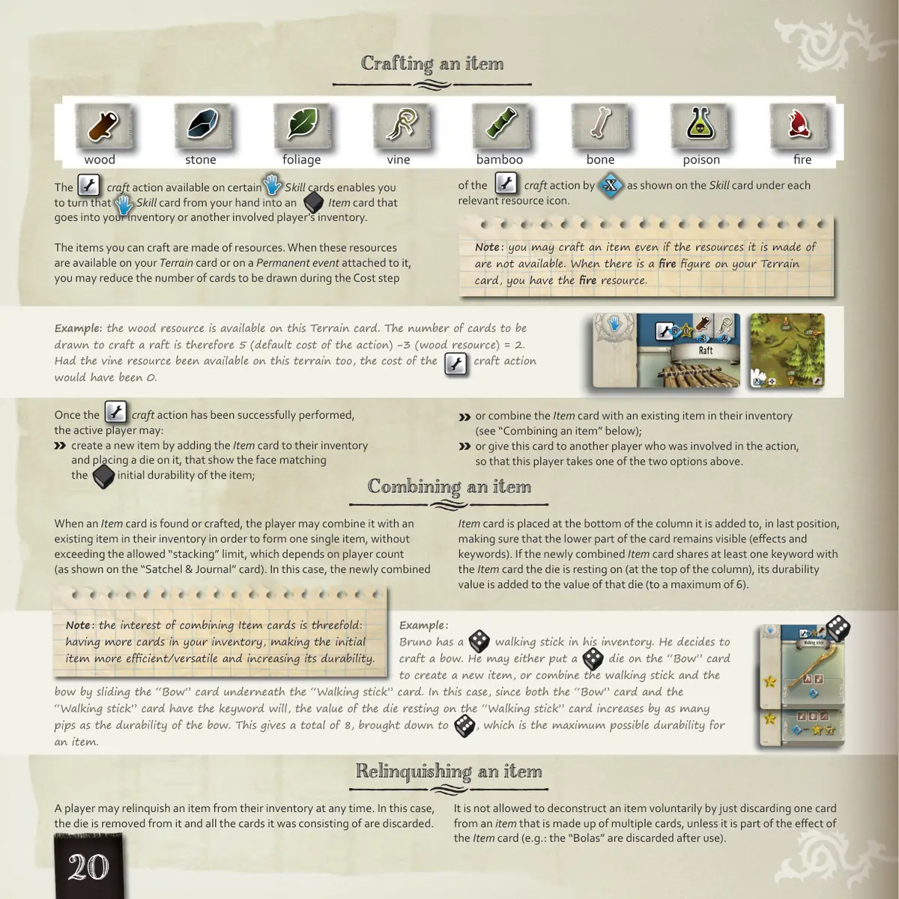
<figcaption>原版规则书 · 第 20 页（点击图片放大）</figcaption>
</figure>

<details class="mt-fold">
<summary>📝 第 20 页 AI 机翻对照（点击展开）</summary>
<div class="mt-body"><p>某些技能卡上的制作行动使你能够将手牌中的那张技能卡转化为一张物品卡，这张物品卡会进入你的库存或另一位参与玩家的库存。</p>

<p>你可以制作的物品由资源构成。当这些资源在你的地形卡上或附着于其上的永久事件上可用时，你可以在制作行动的成本步骤中减少需要抽取的卡牌数量，减少量为-X，如技能卡上每个相关资源图标下方所示。</p>

<p>当发现或制作一张物品卡时，玩家可以将其与库存中已有的物品组合，形成一个单一物品，但不得超过允许的"叠加"限制（该限制取决于玩家数量，如"背包与日志"卡所示）。在这种情况下，新组合的物品卡被放置在其所在列的底部，位于最后位置，确保卡牌的下半部分（效果和关键词）仍然可见。如果新组合的物品卡与骰子所在的那张物品卡（位于列顶）至少共享一个关键词，则其耐久度值会加到该骰子的数值上（最高为6）。</p>

<p>一旦制作行动成功执行，当前玩家可以：</p>

<p>通过将物品卡添加到库存中并在其上放置一张骰子（显示与物品初始耐久度匹配的面）来创建一个新物品；</p>

<p>或将物品卡与库存中已有的物品组合（参见下方的"组合物品"）；</p>

<p>或将这张卡牌给予参与此行动的另一名玩家，由该玩家选择上述两个选项之一。</p>

<p>制作物品</p>

<p>组合物品</p>

<p>注：即使构成物品的资源不可用，你仍然可以制作物品。当你的地形卡上有火标记时，你就拥有火资源。</p>

<p>注：组合物品卡有三重好处：库存中有更多卡牌，使初始物品更高效/多功能，并增加其耐久度。</p>

<p>示例：木材资源在此地形卡上可用。因此，制作木筏需要抽取的卡牌数量为5（行动默认成本）-3（木材资源）=2。如果藤蔓资源也在此地形上可用，那么制作行动的成本将为0。</p>

<p>示例：</p>

<p>布鲁诺的库存中有一根手杖。他决定制作一把弓。他可以将一张骰子放在"弓"卡上创建一个新物品，或者通过将"弓"卡滑到"手杖"卡下方来组合手杖和弓。在这种情况下，由于"弓"卡和"手杖"卡都有will关键词，放在"手杖"卡上的骰子数值会增加弓的耐久度点数。这使总数达到8，降至</p>

<p>，这是物品可能达到的最大耐久度。</p>

<p>:</p>

<p>::</p>

<p>玩家可以随时放弃其物品。在这种情况下，骰子从物品上移除，并且构成该物品的所有卡牌都被弃置。</p>

<p>不允许通过仅弃置由多张卡牌组成的物品中的一张卡牌来自愿分解物品，除非这是物品卡牌效果的一部分（例如："流星锤"在使用后被弃置）。</p>

<p>放弃物品</p>

<p>f</p>

<p>木材</p>

<p>石头</p>

<p>树叶</p>

<p>藤蔓</p>

<p>竹子</p>

<p>骨头</p>

<p>毒药</p>

<p>火焰</p></div>
</details>

<figure>
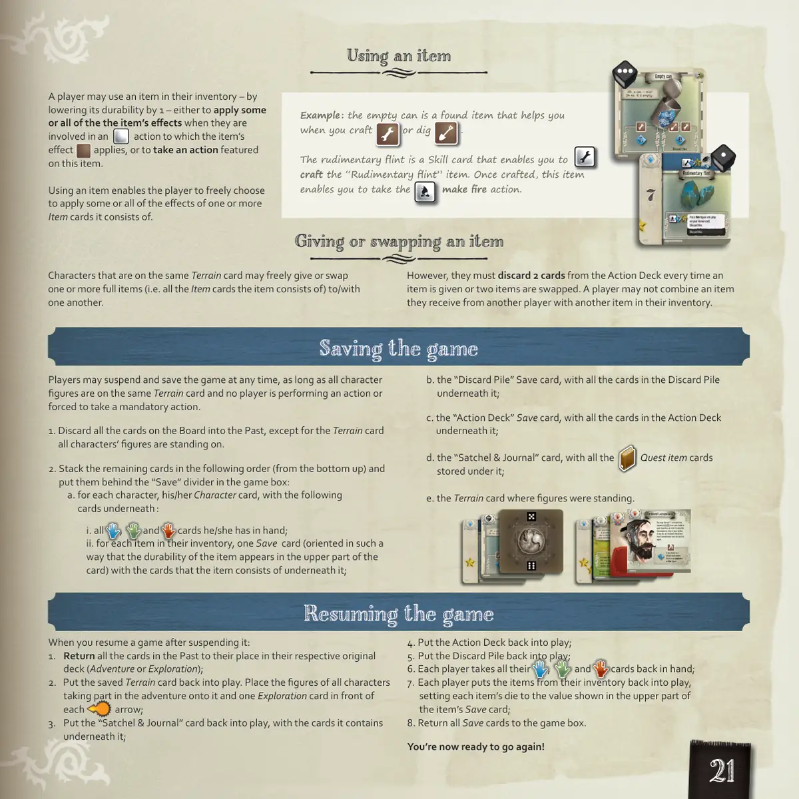
<figcaption>原版规则书 · 第 21 页（点击图片放大）</figcaption>
</figure>

<details class="mt-fold">
<summary>📝 第 21 页 AI 机翻对照（点击展开）</summary>
<div class="mt-body"><p>玩家可以在任何时候暂停并保存游戏，只要所有角色人物模型都在同一地形卡上，且没有玩家正在执行行动或被迫执行强制行动。</p>

<ol>
  <li>将版图上的所有卡牌弃入过去，除了所有角色人物模型所站立的那个地形卡。</li>
  <li>按以下顺序（从下到上）将剩余的卡牌堆叠起来，并将其放入游戏盒中的"保存"分隔符后面：</li>
</ol>

<p>a. 对于每个角色，他的/她的角色卡，下面放置以下卡牌：</p>

<p>i. 他/她手中的所有</p>

<p>、</p>

<p>和</p>

<p>卡牌；</p>

<p>ii. 对于其背包中的每件物品，一张保存卡（方向应使物品的耐久性显示在卡牌的上部），物品所包含的卡牌放在这张保存卡下面；</p>

<p>b. "弃牌堆"保存卡，弃牌堆中的所有卡牌放在它下面；</p>

<p>c. "行动牌库"保存卡，行动牌库中的所有卡牌放在它下面；</p>

<p>d. "背包与日志"卡，所有</p>

<p>任务物品卡</p>

<p>放在它下面；</p>

<p>e. 人物模型所站立的那个地形卡。</p>

<p>当你暂停后恢复游戏时：</p>

<ol>
  <li>将过去中的所有卡牌放回其各自的原牌库（冒险或探索）；</li>
  <li>将保存的地形卡放回游戏中。将参与冒险的所有角色人物模型放在上面，并在每个</li>
</ol>

<p>箭头前放一张探索卡；</p>

<ol>
  <li>将"背包与日志"卡放回游戏中，它包含的卡牌放在它下面；</li>
  <li>将行动牌库放回游戏中；</li>
  <li>将弃牌堆放回游戏中；</li>
</ol>

<h3>6. 每位玩家取回他们所有的</h3>

<p>、</p>

<p>和</p>

<p>卡牌；</p>

<ol>
  <li>每位玩家将其背包中的物品放回游戏中，将每件物品的骰子设置为物品保存卡上部显示的数值；</li>
  <li>将所有保存卡放回游戏盒。</li>
</ol>

<p>你现在可以再次开始了！</p>

<p>玩家可以使用其背包中的物品——通过降低其耐久性1点——来应用该物品的部分或全部效果，当他们参与该物品效果适用的</p>

<p>行动时，或者执行该物品上 featured 的行动。</p>

<p>使用物品使玩家能够自由选择应用一个或多个物品所包含的物品卡的部分或全部效果。</p>

<p>使用物品</p>

<p>f</p>

<p>示例：空罐子是一个找到的物品，当你制作</p>

<p>或挖掘</p>

<p>时对你有帮助。</p>

<p>原始燧石是一张技能卡，使你能够制作"原始燧石"物品。一旦制作完成，该物品使你能够执行</p>

<p>生火行动。</p>

<p>在同一地形卡上的角色可以自由地互相给予或交换一个或多个完整物品（即物品所包含的所有物品卡）。</p>

<p>然而，每次他们这样做时，他们必须从行动牌库中弃掉2张牌。</p>

<p>给予一件物品或交换两件物品。玩家不得将从另一名玩家那里获得的物品与自身库存中的另一件物品合并。</p>

<p>给予或交换物品</p>

<p>f</p>

<p>继续游戏</p>

<p>保存游戏</p></div>
</details>

<figure>
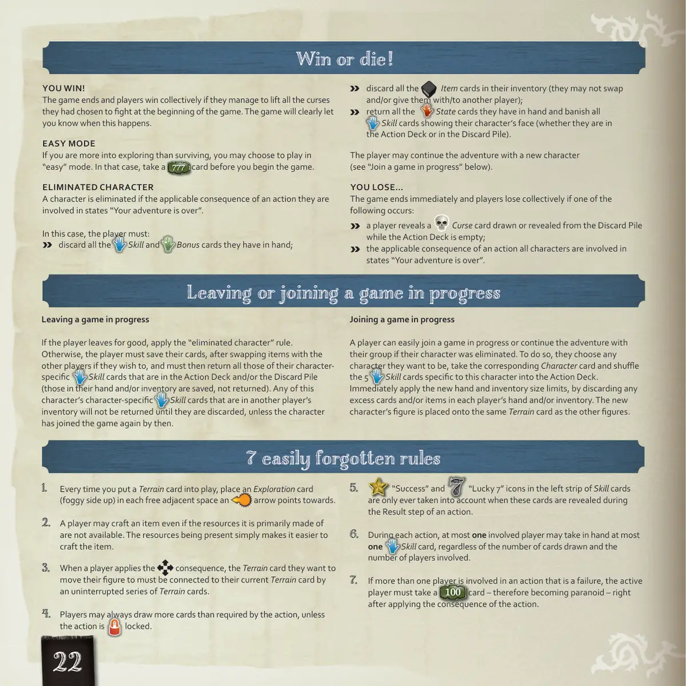
<figcaption>原版规则书 · 第 22 页（点击图片放大）</figcaption>
</figure>

<details class="mt-fold">
<summary>📝 第 22 页 AI 机翻对照（点击展开）</summary>
<div class="mt-body"><p>你赢了！</p>

<p>如果玩家们成功清除了他们在游戏开始时选择对抗的所有诅咒，游戏结束，玩家们集体获胜。当这种情况发生时，游戏会明确告知你。</p>

<h2>简单模式</h2>

<p>如果你更倾向于探索而非生存，你可以选择以"简单"模式进行游戏。在这种情况下，在游戏开始前拿取一张777 777卡牌。</p>

<h2>被淘汰的角色</h2>

<p>如果一个角色参与的行动的适用后果说明"你的冒险结束了"，则该角色被淘汰。</p>

<p>在这种情况下，玩家必须：</p>

<p>弃置手中所有的技能卡和奖励卡；</p>

<p>弃置其背包中的所有物品卡（他们不能与其他玩家交换和/或给予这些卡）；</p>

<p>返还手中所有的状态卡，并放逐所有显示其角色面孔的技能卡（无论它们是在行动牌库中还是在弃牌堆中）。</p>

<p>玩家可以使用新角色继续冒险（参见下方的"加入进行中的游戏"）。</p>

<h2>你输了…</h2>

<p>如果发生以下任一情况，游戏立即结束，玩家们集体失败：</p>

<p>一名玩家在行动牌库为空时，从弃牌堆中抽到或揭示出一张诅咒卡；</p>

<p>所有角色都参与的行动的适用后果说明"你的冒险结束了"。</p>

<p>每次你打出一张地形卡时，在每个箭头指向的相邻空位上放置一张探索卡（雾面朝上）。</p>

<p>玩家可以制作物品，即使其主要材料不可用。资源的存在只是使制作物品更容易。</p>

<p>当玩家应用后果时，他们想要将棋子移动到的地形卡必须通过不间断的一系列地形卡连接到他们当前的地形卡。</p>

<p>玩家总是可以抽取比行动要求更多的牌，除非该行动被锁定。</p>

<p>技能卡左侧条带中的"成功"和"幸运7"图标只有在这些卡牌在行动的结果阶段被揭示时才会被考虑。</p>

<p>在每个行动中，无论抽取了多少张牌以及涉及多少玩家，最多只能有一名参与玩家最多拿取一张技能牌。</p>

<p>如果多个玩家参与的行动失败，主动玩家必须在应用行动后果后立即拿取一张100 100卡牌——因此变得偏执——。</p>

<p>离开进行中的游戏</p>

<p>如果玩家永久离开，应用"被淘汰的角色"规则。</p>

<p>否则，玩家必须保存他们的卡牌，如果他们愿意，可以与其他玩家交换物品，然后必须返还其角色特定的技能卡中所有在行动牌库和/或弃牌堆中的卡牌（他们手中和/或背包中的卡牌被保存，不返还）。这些中的任何</p>

<h2>加入进行中的游戏</h2>

<p>如果角色的角色专属</p>

<p>技能卡牌在另一位玩家的</p>

<p>物品栏中，它们不会被返还，直到被弃置，除非该角色</p>

<p>届时已重新加入游戏。</p>

<p>加入进行中的游戏</p>

<p>如果玩家的角色被淘汰，他们可以轻松加入进行中的游戏或与他们的队伍继续冒险。为此，他们选择自己想要扮演的任何角色，获取对应的角色卡，并将该角色专属的5张技能牌洗入行动牌库。</p>

<p>立即应用新的手牌和物品栏大小限制，通过弃置每位玩家手牌和/或物品栏中的多余卡牌和/或物品。新角色的棋子放置在与其他棋子相同的板块上。</p>

<p>1.</p>

<p>4.</p>

<p>2.</p>

<p>6.</p>

<p>3.</p>

<p>7.</p>

<p>:</p>

<p>:</p>

<p>5.</p>

<p>::</p>

<p>:</p>

<p>7 容易被遗忘的规则</p>

<p>离开或加入进行中的游戏</p>

<p>赢或死！</p></div>
</details>

<figure>
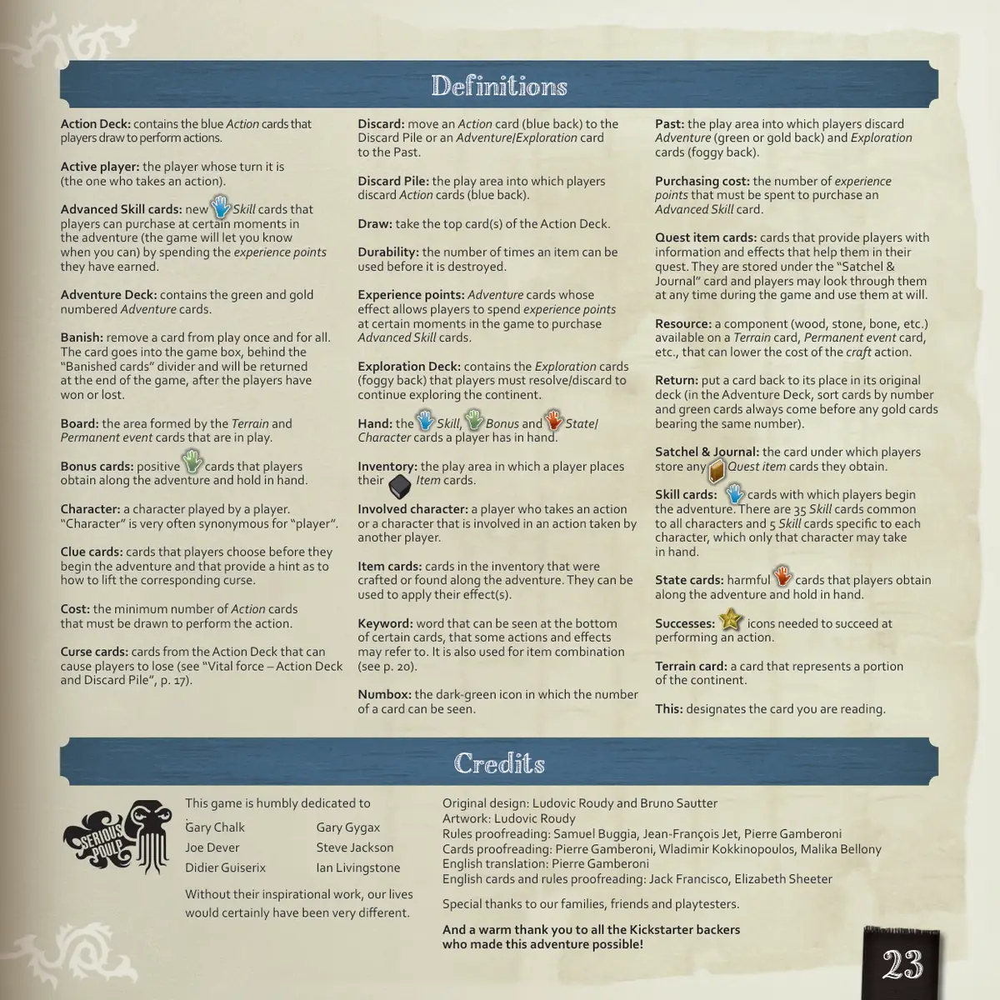
<figcaption>原版规则书 · 第 23 页（点击图片放大）</figcaption>
</figure>

<details class="mt-fold">
<summary>📝 第 23 页 AI 机翻对照（点击展开）</summary>
<div class="mt-body"><p>定义</p>

<p>致谢</p>

<p>本游戏谦谨地献给：</p>

<p>：</p>

<p>若没有他们的启发之作，我们的生活</p>

<p>肯定会大不相同。</p>

<p>Gary Chalk</p>

<p>Joe Dever</p>

<p>Didier Guiserix</p>

<p>Gary Gygax</p>

<p>Steve Jackson</p>

<p>Ian Livingstone</p>

<p>行动牌库：包含玩家抽以执行行动的蓝色行动牌。</p>

<p>当前玩家：轮到行动的玩家（执行行动的玩家）。</p>

<p>高级技能卡：玩家可以在冒险中的特定时刻（游戏会告知何时可以）通过花费他们获得的经验点来购买的新技能卡。</p>

<p>冒险牌库：包含绿色和金色编号的冒险牌。</p>

<p>放逐：永久性地将一张牌移出游戏。该牌放入游戏盒中，"被放逐的牌"分隔板后方，并在玩家赢得或输掉游戏后归还。</p>

<p>版图：由游戏中已打出的地形和永久事件牌形成的区域。</p>

<p>奖励卡：玩家在冒险中获得并持有的正面牌。</p>

<p>角色：玩家扮演的角色。"角色"通常与"玩家"同义。</p>

<p>线索卡：玩家在开始冒险前选择的卡牌，提供如何解除相应诅咒的提示。</p>

<p>费用：执行行动必须抽出的最少行动牌数量。</p>

<p>诅咒牌：来自行动牌库的卡牌，可能导致玩家失败（参见"生命力——行动牌库和弃牌堆"，第17页）。</p>

<p>弃置：将一张行动牌（蓝色背面）移至弃牌堆，或将一张冒险/探索牌移至过去。</p>

<p>弃牌堆：玩家弃置行动牌（蓝色背面）的游戏区域。</p>

<p>摸牌：从行动牌库顶抽牌。</p>

<p>耐久度：物品在被摧毁前可以使用的次数。</p>

<p>经验点：效果允许玩家在游戏中的特定时刻花费经验点购买高级技能卡的冒险牌。</p>

<p>探索牌库：包含玩家必须解决/弃置才能继续探索大陆的探索牌（雾色背面）。</p>

<p>手牌：玩家持有的技能、奖励和状态/角色牌。</p>

<p>物品栏：玩家放置其物品牌的游戏区域。</p>

<p>参与角色：执行行动的玩家或参与其他玩家执行行动的角色。</p>

<p>物品牌：在冒险中制作或找到的位于物品栏中的卡牌。它们可用于应用其效果。</p>

<p>关键词：可在某些卡牌底部看到的词语，某些行动和效果可能会引用它。它也用于物品组合（见第20页）。</p>

<p>数字框：显示卡牌数字的深绿色图标。</p>

<p>过去：玩家弃置冒险牌（绿色或金色背面）和探索牌（雾色背面）的游戏区域。</p>

<p>购买成本：必须花费的经验点数，用于购买高级技能卡牌。</p>

<p>任务物品卡牌：为玩家提供信息和效果的卡牌，帮助他们完成任务。这些卡牌存放在"背包与日志"卡牌下方，玩家可以在游戏期间的任何时间查看它们，并随意使用。</p>

<p>资源：地形卡牌、永久事件卡牌等上可用的组件（木材、石头、骨头等），可以降低制作行动的成本。</p>

<p>归还：将一张卡牌放回其原始牌库中的位置（在冒险牌库中，按数字排序卡牌，绿色卡牌总是排在任何具有相同数字的金色卡牌之前）。</p>

<p>背包与日志：玩家存放所获得的任何任务物品卡牌的卡牌。</p>

<p>技能卡牌：玩家开始冒险时使用的卡牌。有35张所有角色共有的技能卡牌，以及每名角色特有的5张技能卡牌，只有该角色可以将这些卡牌拿入手牌。</p>

<p>状态卡牌：玩家在冒险过程中获得并持在手中的有害卡牌。</p>

<p>成功图标：执行行动所需的成功图标。</p>

<p>地形卡牌：代表大陆一部分的卡牌。</p>

<p>此：指您正在阅读的这张卡牌。</p>

<p>原设计：Ludovic Roudy 和 Bruno Sautter</p>

<p>美术：Ludovic Roudy</p>

<p>规则校对：Samuel Buggia, Jean-François Jet, Pierre Gamberoni</p>

<p>卡牌校对：Pierre Gamberoni, Wladimir Kokkinopoulos, Malika Bellony</p>

<p>英文翻译：Pierre Gamberoni</p>

<p>英文卡牌和规则校对：Jack Francisco, Elizabeth Sheeter</p>

<p>特别感谢我们的家人、朋友和测试玩家。</p>

<p>也向所有使这次冒险成为可能的 Kickstarter 赞助者致以诚挚的感谢！</p></div>
</details>

<figure>
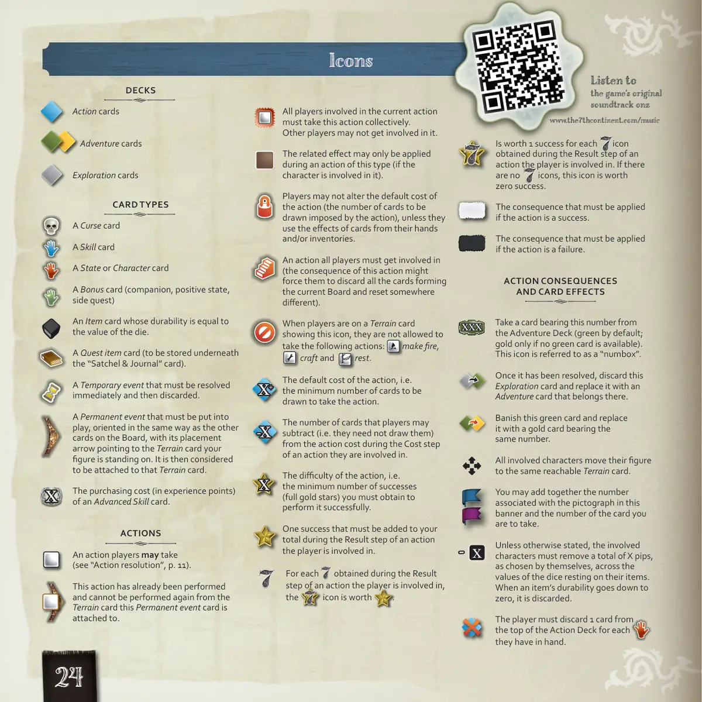
<figcaption>原版规则书 · 第 24 页（点击图片放大）</figcaption>
</figure>

<details class="mt-fold">
<summary>📝 第 24 页 AI 机翻对照（点击展开）</summary>
<div class="mt-body"><p>www.the7thcontinent.com/music</p>

<p>图标</p>

<p>聆听游戏的</p>

<p>原创原声带</p>

<h2>牌库</h2>

<p>行动牌</p>

<p>冒险牌</p>

<p>探索牌</p>

<h2>卡牌类型</h2>

<p>一张诅咒牌</p>

<p>一张技能牌</p>

<p>一张状态或角色牌</p>

<p>一张奖励牌（同伴、积极状态、支线任务）</p>

<p>一张耐久度等于骰子数值的物品牌</p>

<p>一张任务物品牌（需存放在"背包与日记"牌下方）</p>

<p>一张必须立即解决然后弃置的临时事件</p>

<p>一张必须放入游戏中的永久事件，方向与其他版图上的卡牌相同，其放置箭头指向你的角色所站的地形牌。然后它被认为附着于该地形牌。</p>

<p>一张高级技能牌的购买成本（以经验点计）</p>

<h2>行动</h2>

<p>玩家可以采取的行动</p>

<p>（参见"行动结算"，第11页）。</p>

<p>此行动已经执行过，且不能从此永久事件牌所附着的地形牌再次执行。</p>

<p>所有参与当前行动的玩家必须集体执行此行动。</p>

<p>其他玩家不得参与其中。</p>

<p>相关效果只能在执行此类行动时应用（如果角色参与其中）。</p>

<p>玩家不得更改行动的默认成本（行动要求抽牌的数量），除非他们使用手牌和/或物品中的牌效果。</p>

<p>所有玩家都必须参与的行动（此行动的后果可能迫使他们弃置所有构成当前版图的牌并在不同位置重置）。</p>

<p>当玩家位于显示此图标的地形牌上时，他们不允许执行以下行动：</p>

<p>生火、</p>

<p>制作和</p>

<p>休息。</p>

<p>行动的默认成本，即</p>

<p>执行行动所需抽牌的最小数量。</p>

<p>玩家可以在他们参与的行动的"成本"步骤中从行动成本中减去（即无需抽取）的牌数。</p>

<p>行动的难度，即</p>

<p>你必须获得的最小成功数（完整的金色星星）才能成功执行它。</p>

<p>在玩家参与的行动的"结果"步骤中必须添加到你的总数中的一个成功。</p>

<p>对于在玩家参与的行动的"结果"步骤中获得的每个</p>

<p>，该</p>

<p>图标价值</p>

<p>。</p>

<p>在玩家参与的行动的"结果"步骤中，对于每个获得的</p>

<p>图标，价值</p>

<p>。如果没有</p>

<p>图标，此图标价值零成功。</p>

<p>如果行动成功，必须应用的后果。</p>

<p>如果行动失败，必须应用的后果。</p>

<h2>行动后果</h2>

<h2>与卡牌效果</h2>

<p>从冒险牌库（默认为绿色；仅在无绿色牌可用时为金色）抽取一张带有此数字的牌。</p>

<p>此图标被称为"数字框"。</p>

<p>一旦解决，弃掉这张探索卡，并用一张属于那里的冒险卡替换它。</p>

<p>放逐这张绿色卡，并用一张带有相同数字的金色卡替换它。</p>

<p>所有相关角色将他们的棋子移动到同一张可到达的地形卡上。</p>

<p>你可以将此横幅中与象形符号相关联的数字和你将要拿取的卡牌的数字相加。</p>

<p>除非另有说明，相关角色必须从他们物品上骰子的点数中总共移除X个点，由他们自己选择。</p>

<p>当一个物品的耐久度降至零时，它被弃掉。</p>

<p>玩家必须从行动牌库顶部每弃掉1张牌，对应他们手牌中的每张牌。</p>

<p>f</p>

<p>f</p>

<p>f</p>

<p>f</p>

<p>X</p>

<p>X</p>

<p>X+</p>

<p>-X</p>

<p>-X</p>

<h2>XXX</h2>

<h2>XXX</h2>

<ul>
  <li>X</li>
</ul></div>
</details>
        </div>

        <footer class="source-note">
<p>来源：<a href="https://seriouspoulp.com/documents/t7c/The7thContinent_Classic_rulebook_EN_final.pdf" target="_blank" rel="noopener">Serious Poulp 官方</a>（2017 The7thContinent_Classic_rulebook_EN_final.pdf）· 译文仅供个人学习查阅，规则内容归 Serious Poulp 及版权方所有 · 原文版權與商标归原出版方。</p>
</footer>
      </article>
    </main>
  </div>

  <button class="to-top" aria-label="返回顶部" data-i18n-aria="backTop">↑</button>
  <script src="../assets/js/i18n.js"></script>
  <script src="../assets/js/main.js"></script>
</body>
</html>
